Assignments
This page will contain all the assignments you submit for the class.
Instructions for all assignments
Download the Assignment1.Rmd file from Canvas. You can use this as a template for writing your answers. It’s the same as what you can see on my website in the Assignments tab. Once we’re done with this I’ll edit the text on the website to include the solutions.
On RStudio, open a new R script in RStudio (File > New File > R Script). This is where you can test out your R code. You’ll write your R commands and draw plots here.
Once you have finalized your code, copy and paste your results into this template (Assignment 1.Rmd). For example, if you produced a plot as the solution to one of the problems, you can copy and paste the R code in R markdown by using the
``{r} ```command. Answer the questions in full sentences and Save.Produce a PDF file with your answers. To do this, knit to PDF (use Knit button at the top of RStudio), locate the PDF file in your docs folder (it’s in the same folder as the Rproj), and submit that on on Canvas in Assignment 1.
Build Website, go to GitHub desktop, commit and push. Now your solutions should be on your website as well.
Assignment 1
Collaborators: Sara Whitelaw
This assignment is due on Canvas on Monday 9/20 before class, at 10:15 am. Include the name of anyone with whom you collaborated at the top of the assignment.
Problem 1
Install the datasets package on the console below using install.packages("datasets"). Now load the library.
library(datasets)
#This command loads the data set. Load the USArrests dataset and rename it dat. Note that this dataset comes with R, in the package datasets, so there’s no need to load data from your computer. Why is it useful to rename the dataset?
dat<-USArrests
#This command renames our data set "USArrests" as dat. Renaming USArrests as dat makes the name shorter and easier to use. Problem 2
Use this command to make the state names into a new variable called State.
dat$state <- tolower(rownames(USArrests))
#This command renames the state names into a variable called state. This dataset has the state names as row names, so we just want to make them into a new variable. We also make them all lower case, because that will help us draw a map later - the map function requires the states to be lower case.
List the variables contained in the dataset USArrests.
names(dat)## [1] "Murder" "Assault" "UrbanPop" "Rape" "state"This command is telling me what the different variables in the USArrests data set are.
Problem 3
What type of variable (from the DVB chapter) is Murder?
Answer: ‘Murder’ is a quantitative variable.
What R Type of variable is it?
Answer:In R, ‘Murder’ is a numerical variable, which means it is a quantitative variable that is expressed with decimal points.
Problem 4
What information is contained in this dataset, in general? What do the numbers mean?
Answer: This data set contains information about different arrest rates in the United States. It contains statistics for the arrests in every state for three crimes: rape, assault, and murder. The numbers are the amount of arrests per crime per 100,000 residents in that state. The urban pop variable is the percent of residents living in an urban setting.
Problem 5
Draw a histogram of Murder with proper labels and title.
hist(dat$Murder, main='Murder Arrests per 100,000 residents', xlab="Number of Arrests", ylab="Frequency", xlim=c(0,20), ylim=c(0,20),col="pink",breaks=10)### Problem 6
Please summarize Murder quantitatively. What are its mean and median? What is the difference between mean and median? What is a quartile, and why do you think R gives you the 1st Qu. and 3rd Qu.?
summary(dat)## Murder Assault UrbanPop Rape
## Min. : 0.800 Min. : 45.0 Min. :32.00 Min. : 7.30
## 1st Qu.: 4.075 1st Qu.:109.0 1st Qu.:54.50 1st Qu.:15.07
## Median : 7.250 Median :159.0 Median :66.00 Median :20.10
## Mean : 7.788 Mean :170.8 Mean :65.54 Mean :21.23
## 3rd Qu.:11.250 3rd Qu.:249.0 3rd Qu.:77.75 3rd Qu.:26.18
## Max. :17.400 Max. :337.0 Max. :91.00 Max. :46.00
## state
## Length:50
## Class :character
## Mode :character
##
##
## The average number of murder arrests per 100,000 residents is 7.788. The median for this data set is 7.250. Mean is the average value of a data set. Mean is equal to the sum of values divided by the number of values. Mean = sum of values/number of values. The Median is the middle value of a number set after all of the values have been put in an ordered list. Quartiles are three values that divide the data distribution into even fourths. In particular, Q1 and Q3 are important because we can use these two values to calculate the IQR, or interquartile range. The middle half of the data lies within the IQR.
Problem 7
Repeat the same steps you followed for Murder, for the variables Assault and Rape. Now plot all three histograms together. You can do this by using the command par(mfrow=c(3,1)) and then plotting each of the three.
hist(dat$Assault, main='Assault Arrests per 100,000 residents', xlab="Number of Arrests", ylab="Frequency", col="yellow", xlim=c(0,400), ylim=c(0,20),)#The average number of assault arrests per 100,000 residents is 170.8. The median for this data set is 159.0. #Histogram of Rape Arrests per 100,000 Residents
hist(dat$Rape, main='Rape Arrests per 100,000 residents', xlab="Number of Arrests", ylab="Frequency", col="sky blue", xlim=c(0,60), ylim=c(0,20))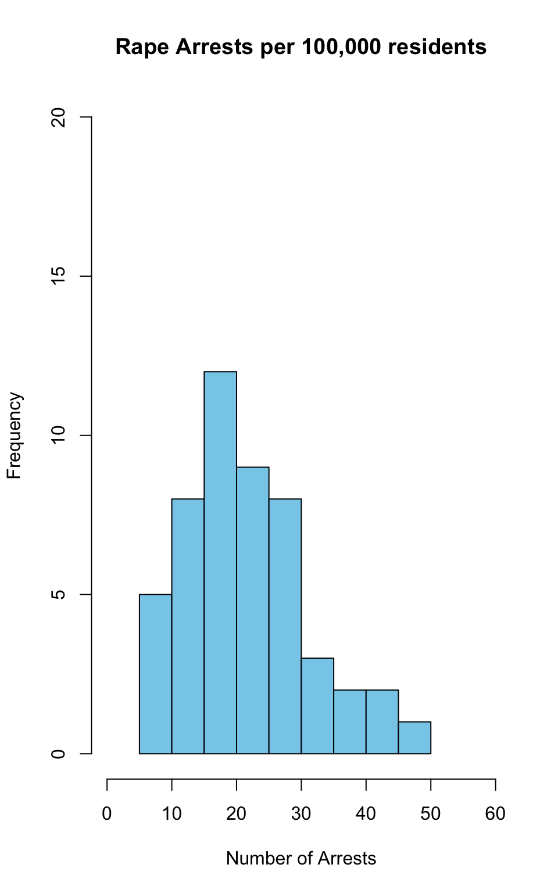
#The average number of rape arrests per 100,000 residents is 21.23 and the median for this data set is 20.10. par(mfrow=c(3,1))
hist(dat$Rape, main='Rape Arrests per 100,000 residents', xlab="Number of Arrests", ylab="Frequency", col="sky blue", xlim=c(0,60), ylim=c(0,20))
hist(dat$Assault, main='Assault Arrests per 100,000 residents', xlab="Number of Arrests", ylab="Frequency", col="yellow", xlim=c(0,400), ylim=c(0,20),)
hist(dat$Murder, main='Murder Arrests per 100,000 residents', xlab="Number of Arrests", ylab="Frequency", xlim=c(0,20), ylim=c(0,20),col="pink",breaks=10)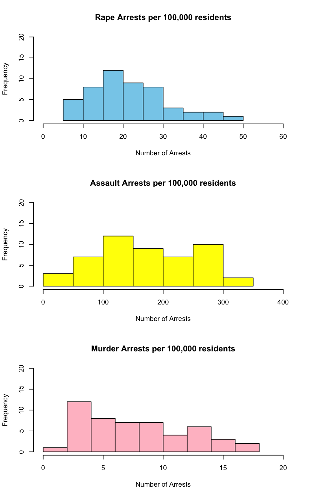
What does the command par do, in your own words (you can look this up by asking R ?par)?
Answer:The command par is used to to set graphical parameters. In this case, it can be used to put multiple graphs on a single plot.
What can you learn from plotting the histograms together?
Answer: From plotting the histograms together, I can compare frequency of the arrest rates for these three crimes. I can see that the number of assault arrests per 100,000 residents has a much wider spread than rape arrests and murder arrests. The number of murder and rape arrests per 100,000 residents has a much smaller spread. This shows that on average, there are more assault arrests per 100,000 residents in the United States than murder or rape arrests. Looking at histograms graphed together, we can visually compare how different, or similar, the statistical characteristics, such as mean, median, spread, of the different data sets are.
Problem 8
In the console below (not in text), type install.packages("maps") and press Enter, and then type install.packages("ggplot2") and press Enter. This will install the packages so you can load the libraries.
#install.packages("ggplot2")
#install.packages("maps")
#'maps' and 'ggplot2' were already downloaded, so I was getting an error message when I had the code in for it.Run this code:
library(maps)
library(ggplot2)
ggplot(dat, aes(map_id=state, fill=Murder)) +
geom_map(map=map_data("state")) +
expand_limits(x=map_data("state")$long, y=map_data("state")$lat)What does this code do? Explain what each line is doing.
Answer: The library code loads the desired packages. In this case, it is loading the packages called ‘map’ and ‘ggplot2’. The combination of the ‘map’ package and the ‘ggplot2’ package allows for the display of maps. The next line is giving the code for the map that we want to generate of the United States. The quoting function aes is for aesthetic mappings and the code that follows is describing what is making up the aesthetic mapping. We are pulling data from the USArrests data set, which was shortened to dat. The fill=murder command is telling R that we want the states to be shaded in according to the“Murder” data set. The expand_limits code describes the x and y axis by longitude and latitude.
Assignment 2
Subtitle: Crim 250: Statistics for the Social Sciences Name: Michaela Rieser Date: 09/23/2021
###Problem 1: Load data
Read the data
read.csv(file="dat.nsduh.small.csv")## mjage cigever alcever AGE2 sexatract speakengl irsex
## 1 21 1 1 15 1 1 1
## 2 20 1 1 14 1 1 1
## 3 14 1 1 16 1 1 1
## 4 17 2 1 8 1 1 2
## 5 11 1 1 13 2 1 2
## 6 18 1 2 14 1 1 1
## 7 12 1 1 15 2 1 2
## 8 16 1 1 14 1 1 1
## 9 14 1 1 16 4 1 1
## 10 15 1 1 11 5 1 1
## 11 28 1 1 14 1 1 2
## 12 12 1 1 15 4 1 2
## 13 13 1 1 13 1 1 1
## 14 20 1 1 14 1 1 1
## 15 33 1 1 14 1 1 2
## 16 20 1 1 16 1 1 1
## 17 26 1 1 13 1 1 1
## 18 18 2 1 13 1 1 2
## 19 18 1 1 17 1 1 2
## 20 36 1 1 15 2 1 2
## 21 15 1 1 15 1 1 1
## 22 17 1 1 13 5 1 1
## 23 14 1 1 15 1 1 2
## 24 13 1 1 16 1 1 1
## 25 14 2 1 5 99 1 2
## 26 15 1 1 15 1 1 2
## 27 17 2 1 6 99 1 1
## 28 18 1 1 15 1 1 1
## 29 18 2 1 9 1 1 2
## 30 16 1 1 14 1 1 1
## 31 19 1 1 15 2 1 1
## 32 17 1 1 7 98 98 1
## 33 19 2 1 15 1 1 2
## 34 17 1 1 15 1 1 2
## 35 16 2 1 6 99 1 2
## 36 21 1 1 17 1 1 1
## 37 20 2 1 11 1 1 1
## 38 12 1 1 15 1 1 2
## 39 8 1 1 6 99 1 1
## 40 14 1 1 15 1 1 2
## 41 18 1 1 15 1 1 2
## 42 16 1 1 9 1 1 1
## 43 18 1 1 15 1 1 1
## 44 16 1 1 13 97 97 2
## 45 19 2 1 15 1 1 2
## 46 18 1 1 13 1 1 2
## 47 16 2 1 5 99 1 1
## 48 14 2 1 12 97 2 2
## 49 34 2 1 15 1 1 2
## 50 14 1 1 12 1 1 1
## 51 16 1 1 14 1 1 2
## 52 18 1 1 12 1 1 1
## 53 18 1 1 12 1 1 1
## 54 18 2 1 12 1 1 2
## 55 20 1 1 15 1 1 1
## 56 15 1 1 16 5 1 1
## 57 24 2 1 15 1 1 1
## 58 16 1 1 8 1 1 2
## 59 14 1 1 15 3 1 2
## 60 16 1 1 15 1 1 1
## 61 15 1 1 16 1 1 1
## 62 17 2 1 7 1 1 1
## 63 12 1 1 11 5 1 2
## 64 16 1 1 11 1 1 1
## 65 11 2 2 1 99 1 2
## 66 16 1 1 15 2 1 2
## 67 18 2 1 7 1 1 2
## 68 16 2 1 12 1 1 2
## 69 14 1 1 13 2 1 2
## 70 16 2 1 15 2 1 2
## 71 11 2 1 1 99 1 1
## 72 19 1 1 15 1 1 2
## 73 16 1 1 14 1 1 1
## 74 20 1 1 15 1 1 1
## 75 10 1 1 14 1 1 1
## 76 16 1 1 15 1 2 1
## 77 23 1 1 13 2 2 2
## 78 22 1 1 15 1 1 2
## 79 12 2 1 11 1 1 1
## 80 17 1 1 15 1 1 2
## 81 22 1 1 11 1 1 1
## 82 9 1 1 4 99 1 1
## 83 18 2 1 12 3 1 1
## 84 12 1 1 16 1 1 1
## 85 23 2 1 17 2 1 2
## 86 15 1 1 16 1 2 1
## 87 17 2 1 16 1 1 1
## 88 20 1 1 13 1 3 2
## 89 16 1 1 15 1 1 1
## 90 23 1 1 15 1 1 2
## 91 18 2 1 9 3 1 2
## 92 17 2 1 6 99 1 1
## 93 16 1 1 13 1 1 1
## 94 12 1 1 6 99 1 2
## 95 18 1 1 8 1 1 2
## 96 16 2 1 7 1 1 2
## 97 15 1 1 15 1 1 1
## 98 14 2 1 12 1 2 1
## 99 15 1 1 15 1 1 1
## 100 16 1 1 12 1 1 2
## 101 20 2 1 9 1 1 2
## 102 18 1 1 15 2 1 2
## 103 15 2 1 6 99 1 1
## 104 20 2 1 11 1 1 2
## 105 13 1 1 6 99 1 1
## 106 19 2 1 15 1 1 2
## 107 20 1 1 15 1 3 2
## 108 18 1 1 15 1 1 2
## 109 16 1 1 14 1 1 2
## 110 18 1 1 15 1 1 2
## 111 15 1 1 17 2 1 1
## 112 10 1 1 17 1 1 1
## 113 15 2 1 16 1 1 1
## 114 20 2 1 10 1 1 2
## 115 18 1 1 10 1 1 2
## 116 14 1 1 9 1 1 2
## 117 21 2 1 11 1 1 1
## 118 18 1 1 14 1 1 1
## 119 18 1 2 8 3 2 2
## 120 22 2 1 16 1 1 2
## 121 15 1 1 10 1 1 1
## 122 16 1 1 11 1 1 1
## 123 22 1 1 13 1 1 1
## 124 15 1 1 15 1 2 2
## 125 16 1 1 14 1 1 1
## 126 16 2 1 7 1 1 1
## 127 17 1 1 13 1 1 1
## 128 16 1 1 13 2 1 2
## 129 19 1 1 14 1 1 1
## 130 27 1 1 15 1 1 1
## 131 22 1 1 15 1 1 1
## 132 17 2 1 9 1 1 2
## 133 9 1 1 13 3 1 2
## 134 15 1 1 16 1 1 2
## 135 14 2 1 6 99 1 1
## 136 18 1 1 14 1 1 1
## 137 14 1 1 14 2 1 2
## 138 14 1 1 11 1 1 2
## 139 13 1 1 4 99 1 1
## 140 16 1 1 16 1 1 1
## 141 18 2 1 12 1 1 1
## 142 18 2 1 11 1 1 2
## 143 20 1 1 17 1 1 1
## 144 27 2 1 15 1 1 1
## 145 18 1 1 15 1 1 2
## 146 13 1 1 15 1 1 2
## 147 19 1 2 8 1 1 1
## 148 13 2 1 2 99 1 2
## 149 16 1 1 12 3 1 2
## 150 16 1 1 12 2 1 1
## 151 17 1 1 14 1 1 1
## 152 17 1 1 16 1 1 2
## 153 19 1 1 15 1 1 1
## 154 15 1 1 15 1 1 1
## 155 20 1 1 15 1 1 2
## 156 15 1 1 15 1 1 1
## 157 16 1 1 15 1 1 1
## 158 18 1 1 15 1 1 2
## 159 14 1 1 13 1 1 1
## 160 18 2 1 7 1 1 1
## 161 7 1 1 13 1 1 1
## 162 15 2 1 6 99 1 1
## 163 13 2 1 16 1 1 2
## 164 17 1 1 9 3 1 2
## 165 18 1 1 11 2 1 2
## 166 21 1 1 13 1 1 1
## 167 19 1 1 13 1 1 2
## 168 13 1 1 9 3 1 2
## 169 15 1 1 17 1 1 1
## 170 18 1 1 16 1 1 2
## 171 13 1 1 15 1 1 1
## 172 16 1 1 15 1 1 2
## 173 18 1 1 7 1 1 1
## 174 18 2 1 9 5 1 1
## 175 17 2 1 11 1 1 2
## 176 15 2 1 10 1 1 1
## 177 17 2 1 15 1 1 2
## 178 11 1 1 16 1 1 1
## 179 21 1 1 14 1 1 2
## 180 17 1 1 15 1 3 2
## 181 17 1 1 13 1 1 2
## 182 17 2 1 15 1 1 2
## 183 14 2 1 4 99 1 1
## 184 15 1 1 16 1 1 2
## 185 21 1 1 15 1 1 2
## 186 18 1 1 11 1 1 1
## 187 20 1 1 15 1 1 2
## 188 28 2 1 13 2 1 2
## 189 31 1 1 14 1 1 2
## 190 18 2 1 14 1 1 2
## 191 18 1 1 15 1 1 1
## 192 22 2 2 15 1 1 1
## 193 18 2 1 16 1 1 2
## 194 14 1 1 15 1 1 1
## 195 38 1 1 15 1 1 2
## 196 30 1 1 15 5 1 1
## 197 21 1 1 17 1 1 1
## 198 13 1 1 15 1 1 2
## 199 21 2 1 17 1 1 2
## 200 32 2 1 14 1 1 2
## 201 22 1 1 13 1 1 1
## 202 20 1 1 15 1 1 2
## 203 14 2 1 5 99 1 1
## 204 16 1 1 16 1 1 1
## 205 18 1 1 13 1 1 2
## 206 16 1 1 16 1 1 2
## 207 25 1 1 13 4 1 2
## 208 15 1 1 13 1 1 2
## 209 15 1 1 15 1 1 1
## 210 18 1 1 11 5 1 1
## 211 15 1 1 11 2 1 1
## 212 18 1 1 15 1 1 2
## 213 18 1 1 17 1 1 2
## 214 15 1 1 13 1 1 2
## 215 14 1 1 16 1 1 2
## 216 12 1 1 15 1 1 1
## 217 13 2 2 3 99 1 1
## 218 14 2 1 10 1 1 2
## 219 12 1 1 13 1 1 1
## 220 18 2 1 12 1 1 2
## 221 15 1 1 13 1 1 1
## 222 16 1 1 10 1 1 2
## 223 17 1 1 16 1 1 2
## 224 15 1 2 13 1 2 1
## 225 35 1 1 15 2 1 2
## 226 14 2 2 4 99 1 2
## 227 18 1 1 8 1 1 1
## 228 11 1 1 15 2 1 2
## 229 20 1 1 11 3 2 1
## 230 17 1 1 16 1 1 1
## 231 16 1 1 15 1 1 2
## 232 21 1 1 13 1 1 1
## 233 45 2 1 16 1 1 2
## 234 17 1 1 14 1 1 1
## 235 15 1 1 8 1 1 2
## 236 17 2 1 15 1 1 2
## 237 15 1 1 14 2 1 1
## 238 13 1 1 13 6 1 1
## 239 15 1 1 9 4 1 2
## 240 22 1 1 15 1 1 2
## 241 21 1 1 17 1 1 2
## 242 13 1 1 9 1 1 1
## 243 18 1 1 16 1 1 1
## 244 12 1 1 12 1 1 2
## 245 14 1 1 14 1 1 1
## 246 19 1 1 12 1 1 2
## 247 9 1 1 16 1 1 2
## 248 16 1 1 13 1 1 2
## 249 16 1 1 13 1 1 2
## 250 14 1 1 15 1 2 1
## 251 14 1 1 10 3 1 2
## 252 21 1 1 13 2 1 2
## 253 16 1 1 15 1 1 1
## 254 19 1 1 15 1 1 2
## 255 18 2 1 15 1 1 2
## 256 13 1 1 12 3 1 2
## 257 14 1 1 13 1 1 1
## 258 21 1 1 15 1 1 2
## 259 25 1 1 16 1 1 2
## 260 15 1 2 15 1 1 1
## 261 35 2 1 17 5 1 1
## 262 15 2 1 9 1 1 2
## 263 14 1 1 3 99 1 2
## 264 20 1 1 14 1 1 1
## 265 13 1 1 8 3 1 2
## 266 17 1 1 16 1 1 2
## 267 14 1 1 9 1 1 1
## 268 14 1 1 9 1 1 1
## 269 17 1 1 13 1 1 2
## 270 14 2 1 4 99 1 1
## 271 20 2 1 17 3 1 2
## 272 15 1 1 15 2 1 2
## 273 16 2 1 14 1 1 1
## 274 16 1 1 15 1 1 2
## 275 14 1 1 16 1 1 1
## 276 15 1 1 13 1 1 2
## 277 20 1 1 10 1 1 1
## 278 15 2 1 5 99 1 1
## 279 13 1 1 13 3 2 2
## 280 21 1 1 12 1 1 2
## 281 16 1 1 11 4 1 2
## 282 17 1 1 15 1 2 1
## 283 14 1 1 10 2 1 2
## 284 14 1 1 15 1 1 2
## 285 16 2 1 17 1 1 1
## 286 20 2 1 12 1 1 2
## 287 15 1 1 13 1 1 2
## 288 20 1 1 14 1 1 1
## 289 29 2 1 15 1 1 1
## 290 29 1 1 15 2 1 2
## 291 15 2 1 14 1 1 2
## 292 18 1 1 16 1 1 2
## 293 27 1 1 15 1 1 2
## 294 16 1 1 16 1 1 2
## 295 16 1 1 12 1 1 2
## 296 12 1 1 15 1 2 1
## 297 18 1 1 14 1 2 1
## 298 25 1 1 17 1 2 1
## 299 15 2 1 13 1 1 1
## 300 10 1 1 16 1 1 2
## 301 16 1 1 14 1 1 2
## 302 17 1 1 12 1 2 1
## 303 13 1 1 14 1 1 1
## 304 14 1 1 9 3 1 2
## 305 14 2 1 10 3 1 2
## 306 13 1 1 15 1 1 1
## 307 21 2 1 11 1 1 1
## 308 15 1 1 15 1 1 1
## 309 13 1 1 15 1 1 1
## 310 17 2 1 15 2 1 2
## 311 12 2 1 6 99 2 1
## 312 12 1 1 16 1 1 1
## 313 18 2 1 15 4 3 2
## 314 13 1 1 13 2 1 2
## 315 14 1 1 5 99 1 1
## 316 13 1 1 9 1 1 1
## 317 21 2 1 10 1 1 1
## 318 16 1 1 16 2 1 1
## 319 17 1 1 9 3 1 2
## 320 16 1 1 11 1 1 2
## 321 19 2 1 13 1 1 1
## 322 13 1 1 11 1 1 2
## 323 25 1 1 17 1 1 1
## 324 18 1 1 15 1 1 1
## 325 12 1 1 10 2 1 2
## 326 19 1 1 11 1 1 2
## 327 19 2 1 14 1 1 1
## 328 11 1 1 8 3 1 2
## 329 14 1 1 15 1 1 1
## 330 14 1 1 15 1 2 1
## 331 14 1 1 14 5 1 1
## 332 15 1 1 16 1 1 1
## 333 17 1 1 15 1 1 1
## 334 17 2 2 6 99 1 1
## 335 16 2 1 8 1 1 2
## 336 17 2 1 17 1 1 2
## 337 18 1 1 16 1 1 2
## 338 23 2 1 15 4 2 1
## 339 18 2 1 15 1 1 1
## 340 11 1 1 15 1 1 1
## 341 14 1 1 15 1 1 1
## 342 14 1 1 15 1 1 1
## 343 15 2 1 8 1 1 2
## 344 15 1 1 15 1 1 1
## 345 20 1 1 12 1 1 2
## 346 15 1 1 15 1 1 2
## 347 21 2 1 12 3 1 2
## 348 20 1 2 15 1 1 2
## 349 18 1 1 9 1 1 1
## 350 21 1 1 11 5 1 1
## 351 19 2 1 12 3 1 2
## 352 15 1 1 16 1 1 1
## 353 14 1 1 14 1 1 2
## 354 17 1 1 15 1 1 1
## 355 17 1 1 11 1 1 1
## 356 20 2 1 15 1 3 1
## 357 25 1 1 17 1 1 1
## 358 16 1 1 13 1 1 1
## 359 21 2 1 11 2 1 2
## 360 11 1 1 15 1 1 1
## 361 17 1 1 15 1 1 1
## 362 16 1 1 15 1 1 2
## 363 17 1 1 13 1 4 1
## 364 17 1 1 12 1 1 1
## 365 32 1 1 17 1 1 2
## 366 15 1 1 15 1 1 2
## 367 14 1 1 16 1 1 1
## 368 17 1 1 17 1 1 1
## 369 14 1 1 15 1 1 2
## 370 12 2 1 5 99 1 1
## 371 17 1 1 15 1 1 2
## 372 14 2 1 3 99 1 1
## 373 15 1 1 15 1 1 2
## 374 16 1 1 15 1 1 1
## 375 15 1 1 9 1 1 2
## 376 16 2 1 7 4 1 2
## 377 16 1 1 15 1 1 2
## 378 13 1 1 13 1 1 1
## 379 15 1 1 16 1 1 1
## 380 15 2 1 11 1 1 2
## 381 18 1 1 14 1 1 2
## 382 16 1 1 16 1 1 1
## 383 19 1 1 13 5 1 2
## 384 16 2 1 13 1 1 1
## 385 17 1 1 15 1 1 2
## 386 14 1 1 6 99 1 2
## 387 14 1 1 15 1 1 1
## 388 20 2 1 11 1 1 2
## 389 16 1 1 14 1 1 2
## 390 16 1 1 6 99 1 2
## 391 14 1 1 15 1 1 1
## 392 13 1 1 4 99 2 2
## 393 18 1 1 15 1 1 1
## 394 39 1 1 15 1 1 1
## 395 15 1 1 17 1 1 1
## 396 19 1 1 13 1 1 2
## 397 16 1 1 14 2 1 1
## 398 11 1 1 17 1 1 1
## 399 13 2 1 11 2 1 2
## 400 16 1 1 12 2 1 2
## 401 14 1 1 16 1 1 2
## 402 16 1 1 16 1 1 2
## 403 20 1 1 14 1 2 1
## 404 13 1 1 15 2 1 2
## 405 12 2 2 2 99 1 2
## 406 18 2 1 7 1 1 1
## 407 21 1 1 14 1 1 1
## 408 16 1 1 15 1 1 2
## 409 12 1 1 14 1 1 1
## 410 18 2 1 16 1 1 1
## 411 9 1 1 14 1 1 1
## 412 18 1 1 15 1 1 1
## 413 13 1 1 14 1 1 1
## 414 16 1 1 12 1 1 1
## 415 12 1 1 13 1 1 1
## 416 18 1 1 11 2 1 2
## 417 21 2 1 12 1 1 2
## 418 34 1 1 15 1 1 1
## 419 11 1 1 15 3 1 2
## 420 17 1 1 10 1 1 2
## 421 14 1 1 4 99 1 2
## 422 13 2 1 3 99 1 2
## 423 14 2 1 8 4 1 2
## 424 20 1 1 13 3 1 2
## 425 15 1 1 13 97 97 2
## 426 16 2 1 9 1 1 2dat2 <- read.csv(file = "dat.nsduh.small.csv")What are the dimensions of the dataset?
names(dat2)## [1] "mjage" "cigever" "alcever" "AGE2" "sexatract" "speakengl"
## [7] "irsex"The variables are mjaje, cigever, alcever, age2, sexatract, speakenglish, irsex.
Problem 2: Variables
Describe the variables in the data set.
summary(dat2)## mjage cigever alcever AGE2
## Min. : 7.00 Min. :1.000 Min. :1.000 Min. : 1.00
## 1st Qu.:14.00 1st Qu.:1.000 1st Qu.:1.000 1st Qu.:11.00
## Median :16.00 Median :1.000 Median :1.000 Median :14.00
## Mean :17.08 Mean :1.256 Mean :1.028 Mean :12.77
## 3rd Qu.:18.00 3rd Qu.:2.000 3rd Qu.:1.000 3rd Qu.:15.00
## Max. :45.00 Max. :2.000 Max. :2.000 Max. :17.00
## sexatract speakengl irsex
## Min. : 1.00 Min. : 1.000 Min. :1.000
## 1st Qu.: 1.00 1st Qu.: 1.000 1st Qu.:1.000
## Median : 1.00 Median : 1.000 Median :2.000
## Mean :10.09 Mean : 1.758 Mean :1.507
## 3rd Qu.: 2.00 3rd Qu.: 1.000 3rd Qu.:2.000
## Max. :99.00 Max. :98.000 Max. :2.000All of the variables in our study have been made into quantitative variables. For each of the questions, the response was a numerical answer. Even for the questions that could have been seen as categorical, the respondents answered with a number. The responses to each question were coded into a numerical value.For example, one of the variables is sexual attraction, and the responses are “I am only attracted to the opposite sex”, “I am mostly attracted to opposite sex”, “I am equally attracted to males and females”, “I am mostly attracted to the same sex”, “I am only attracted to the same sex”, and “I am not sure” all correspond to a numerical value. This is useful because we are able to use quantitative variable techniques to learn more about the sample. For example, we can calculate the mean and median because our responses have been translated into numbers.
What is this data set about? Who collected the data, what kind of sample is it, and what was the purpose of generating the data? This data set is just a small sample taken from the 2019 National Survey of Drug Use and Health. The National Survey on Drug Use and Health (NSDUH) was collected by the US Department of Health and Human Services. NSDUH is a sample survey of the population of United States citizens aged 12 and older. The goal of this survey is to generate a large statistical information data base on the use of alcohol, tobacco, drugs, and mental health in the United States. The survey wants to track trends in substance use and mental illness. For the purpose of this class, we only are looking at some of the data collected in this survey. We are focused on looking at the trends and spread of the data collected about the age of first marijuana use, the age when individuals first started smoking cigarettes everyday, and the age of first alcohol use. We also are looking at the data that asks how well the respondent speaks English, their current age, their sexual attraction, and their gender.
###Problem 3: Age and gender
What is the age distribution of the sample like? Make sure you read the codebook to know what the variable values mean.
The histogram does not directly express the years of age along the x axis. The ages of the respondents were coded into groups. For example, a value of 1 for age corresponds to the responded being 12 years old I feel that it is difficult to really determine the distribution of ages, because some numerical values correspond to only a single year of age and others correspond to larger age groups, such as 50-64 year olds. I think it would be better if the ages were expressed as a normal quantitative data set, or each numerical value corresponded to age groups of the same length (for example, the age range for each was 3 years for all, and not varying).From summarizing the data for AGE2 and producing a histogram, I can see that the average was 13.98 which corresponds to an average respondent age of between 30 and 34 years of age. Respondents were all over the age of 12. The histogram allows for the visualization of the spread. The data appears to be skewed left, but I think that this could just be a result of how the ages were grouped. Of course the graph would appear to be skewed left when the second half of the age code encompasses ages 22 through 65+.
Do you think this age distribution representative of the US population? Why or why not? No, I do not think that this age distribution is representative of the US population because there is no representation of the population under 12 years of age. Although these questions would not be appropriate to ask children, if the sampling was for all ages, then perhaps the age distribution would be representative of the US population. Also, it would make more sense that there would more people under 25 because not all children reach adulthood.
Is the sample balanced in terms of gender? If not, are there more females or males?
counts <- table(dat2$irsex)
barplot(counts, main="Gender Distribution", xlab="Gender", ylab="Frequency", names=c("Male", "Female"), ylim=c(0,300), col="sky blue")
counts <- table(dat2$irsex)pie(counts, labels=c("Male", "Female"), main="Gender Distribution")
table(dat2$irsex)##
## 1 2
## 210 216I used both a bar plot and pie chart to look at the gender distribution. From both graphs, I can see that the sample is not 50% men, 50% women. There are more male responses in our sample than women. However, the difference is only slight. If there was an equal number of men (1) and women (2) in this study, the mean would be exactly 1.5. However, the mean is slightly less than 1.5, it is 1.468. Because the mean is pulled slightly closer to 1 (which is the numerical code for male respondent).Also, I was able to make a table of irsex and see how many respondents answered 1(male) or 2(female), 91 answered male and 80 answered female.
Use this code to draw a stacked bar plot to view the relationship between sex and age. What can you conclude from this plot?
From a stacked bar plot, we can compare the age and sex distributions of the respondents simultaneously. With this bar plot, we can compare how sex is distributed in each age category. For example, in age category 8, which corresponds to respondent is 19 years old, we can see that there were much more female respondents than male (if there were any male at all).
Problem 4: Substance use
For which of the three substances included in the data set (marijuana, alcohol, and cigarettes) do individuals tend to use the substance earlier?
summary(dat2)## mjage cigever alcever AGE2
## Min. : 7.00 Min. :1.000 Min. :1.000 Min. : 1.00
## 1st Qu.:14.00 1st Qu.:1.000 1st Qu.:1.000 1st Qu.:11.00
## Median :16.00 Median :1.000 Median :1.000 Median :14.00
## Mean :17.08 Mean :1.256 Mean :1.028 Mean :12.77
## 3rd Qu.:18.00 3rd Qu.:2.000 3rd Qu.:1.000 3rd Qu.:15.00
## Max. :45.00 Max. :2.000 Max. :2.000 Max. :17.00
## sexatract speakengl irsex
## Min. : 1.00 Min. : 1.000 Min. :1.000
## 1st Qu.: 1.00 1st Qu.: 1.000 1st Qu.:1.000
## Median : 1.00 Median : 1.000 Median :2.000
## Mean :10.09 Mean : 1.758 Mean :1.507
## 3rd Qu.: 2.00 3rd Qu.: 1.000 3rd Qu.:2.000
## Max. :99.00 Max. :98.000 Max. :2.000To answer this question, I looked at both the minimum age and the average age for the first time trying each of these substances. The youngest that any of these respondents had ever tried alcohol was 5 years old, whereas the youngest that anyone had ever tried cigarettes or marijuana was 10 and 7, respectively.The average age at first alcohol drink was 14.95 or ~15 years old. The average age at first cigarette was 17.65 years old and the average age of first time using marijuana was 15.99 or ~16. On average, individuals tend to use alcohol earliest.
###Problem 5: Sexual attraction
What does the distribution of sexual attraction look like? Is this what you expected?
counts <- table(dat2$sexatract)
barplot(counts, ylim = c(0,150), main="Sexual Attraction/Orientation Distribution", xlab="Sexual Attraction", names=c("1", "2", "3", "4", " 5", "6", "97", "98","99"))The majority of respondents are straight/only attracted to the opposite sex. For this variable, it is not helpful to look at the mean, because it is skewed due to the code 99 for skipped question. By looking at both the bar plot and the median, Q1 and Q3, I can see that almost all of the data falls in the opposite sex only code of 1. This is not what I expected at all.Especially today, in which there is a greater level of acceptance of LGBTQIA+ individuals, I would feel that the distribution would not be so centered around 1, only opposite sex attraction.
What is the distribution of sexual attraction by gender?
tab.gendersexattract <- table(dat2$irsex, dat2$sexatract)
barplot(tab.gendersexattract,
main = "Sexual Attraction of Men and Women", ylim=c(0,150),
xlab = "Sexual Attraction", ylab = "Frequency",
legend.text = rownames(tab.gendersexattract),
beside = FALSE) # Stacked bars (default)
###Problem 6: English speaking
What does the distribution of English speaking look like in the sample? Is this what you might expect for a random sample of the US population?
counts <- table(dat2$speakengl)
barplot(counts, ylim = c(0,200), main="English Speaking Ability", xlab="Language Code ") To answer this question, I looked at both the median, mean, Q1, Q3, and a bar chart for the data collected on English speaking ability.75% or more of the respondents can speak English very well, looking at Q3.
To answer this question, I looked at both the median, mean, Q1, Q3, and a bar chart for the data collected on English speaking ability.75% or more of the respondents can speak English very well, looking at Q3.
table(dat2$speakengl)##
## 1 2 3 4 97 98
## 396 21 5 1 2 1Also, by making a table with the data from speakengl, I am able to see that 161 of the respondents answered that they speak English very well, in comparison to only 8 answering 2(well) and 2 answering 3(not well).
Are there more English speaker females or males?
tab.genderspeakengl <- table(dat2$irsex, dat2$speakengl)
barplot(tab.genderspeakengl,
main = "English Speaking Ability of Men and Women", ylim=c(0,200),
xlab = "English Speaking Ability", ylab = "Frequency",
legend.text = rownames(tab.genderspeakengl),
beside = FALSE) # Stacked bars (default)table(dat2$speakengl, dat2$irsex)##
## 1 2
## 1 192 204
## 2 15 6
## 3 1 4
## 4 1 0
## 97 0 2
## 98 1 0Looking at the stacked bar plot for gender and English speaking ability, I can’t really tell if there are more men or more women able to speak English.I decided to make a table to see exactly how many men and women answered 1 (speaks English very well). From this table, I can see that 84 men answered this, whereas only 77 women answered that they can speak English very well.However, there were more male respondents than female, so I decided to calculate percent of men and percent of women can speak English “very well”. 96.25% of female respondents speak English very well. 86.6% of male respondents speak English very well. A greater percent of female respondents are able to speak English very well. However, just looking at number of respondents, more men speak English very well.
\[\\[2in]\]
Exam 1
###Instructions
Create a folder in your computer (a good place would be under Crim 250, Exams).
Download the dataset from the Canvas website (fatal-police-shootings-data.csv) onto that folder, and save your Exam 1.Rmd file in the same folder.
Download the README.md file. This is the codebook.
Load the data into an R data frame.
datexam <- read.csv("fatal-police-shootings-data.csv")###Problem 1 (10 points)
- Describe the dataset. This is the source: https://github.com/washingtonpost/data-police-shootings . Write two sentences (max.) about this.
This data set is a record of every fatal police shooting in the United States since January 1, 2015. The data set gives a unique identification for each victim, the name of the victim, the date of the shooting, the manner of death, whether the victim was armed, the age, gender, and race of the victim, the city and state of the shooting, whether or not the victim had signs of mental illness, the threat level, how/if the victim tried to flee, whether or not a body camera was worn by the officer, the latitude and longitude location, and the accuracy of these coordinates.
- How many observations are there in the data frame?
names(datexam)## [1] "id" "name"
## [3] "date" "manner_of_death"
## [5] "armed" "age"
## [7] "gender" "race"
## [9] "city" "state"
## [11] "signs_of_mental_illness" "threat_level"
## [13] "flee" "body_camera"
## [15] "longitude" "latitude"
## [17] "is_geocoding_exact"There are 17 different variables in the data frame. 6954 individuals were observed (6954 victims).
- Look at the names of the variables in the data frame. Describe what “body_camera”, “flee”, and “armed” represent, according to the codebook. Again, only write one sentence (max) per variable.
summary(datexam)## id name date manner_of_death
## Min. : 3 Length:6594 Length:6594 Length:6594
## 1st Qu.:1860 Class :character Class :character Class :character
## Median :3662 Mode :character Mode :character Mode :character
## Mean :3651
## 3rd Qu.:5437
## Max. :7194
##
## armed age gender race
## Length:6594 Min. : 6.00 Length:6594 Length:6594
## Class :character 1st Qu.:27.00 Class :character Class :character
## Mode :character Median :35.00 Mode :character Mode :character
## Mean :37.12
## 3rd Qu.:45.00
## Max. :91.00
## NA's :308
## city state signs_of_mental_illness
## Length:6594 Length:6594 Length:6594
## Class :character Class :character Class :character
## Mode :character Mode :character Mode :character
##
##
##
##
## threat_level flee body_camera longitude
## Length:6594 Length:6594 Length:6594 Min. :-160.01
## Class :character Class :character Class :character 1st Qu.:-112.09
## Mode :character Mode :character Mode :character Median : -94.31
## Mean : -97.16
## 3rd Qu.: -83.12
## Max. : -67.87
## NA's :314
## latitude is_geocoding_exact
## Min. :19.50 Length:6594
## 1st Qu.:33.48 Class :character
## Median :36.09 Mode :character
## Mean :36.66
## 3rd Qu.:40.00
## Max. :71.30
## NA's :314“body_camera” is a categorical variable that represents whether or not the officer was reported in the news to be wearing a body cam at the time of the incident and whether or not any of the incident was recorded. “flee” is another categorical variable that represents whether or not news reports indicated that the victim was fleeing at the time of shooting and if it was by foot or car. “armed” is another categorical variable that indicates if the victim was armed.
- What are three weapons that you are surprised to find in the “armed” variable? Make a table of the values in “armed” to see the options.
table(datexam$armed)##
## air conditioner
## 207 1
## air pistol Airsoft pistol
## 1 3
## ax barstool
## 24 1
## baseball bat baseball bat and bottle
## 20 1
## baseball bat and fireplace poker baseball bat and knife
## 1 1
## baton BB gun
## 6 15
## BB gun and vehicle bean-bag gun
## 1 1
## beer bottle binoculars
## 3 1
## blunt object bottle
## 5 1
## bow and arrow box cutter
## 1 13
## brick car, knife and mace
## 2 1
## carjack chain
## 1 3
## chain saw chainsaw
## 2 1
## chair claimed to be armed
## 4 1
## contractor's level cordless drill
## 1 1
## crossbow crowbar
## 9 5
## fireworks flagpole
## 1 1
## flashlight garden tool
## 2 2
## glass shard grenade
## 4 1
## gun gun and car
## 3798 12
## gun and knife gun and machete
## 22 3
## gun and sword gun and vehicle
## 1 17
## guns and explosives hammer
## 3 18
## hand torch hatchet
## 1 14
## hatchet and gun ice pick
## 2 1
## incendiary device knife
## 2 955
## knife and vehicle lawn mower blade
## 1 2
## machete machete and gun
## 51 1
## meat cleaver metal hand tool
## 6 2
## metal object metal pipe
## 5 16
## metal pole metal rake
## 4 1
## metal stick microphone
## 3 1
## motorcycle nail gun
## 1 1
## oar pellet gun
## 1 3
## pen pepper spray
## 1 2
## pick-axe piece of wood
## 4 7
## pipe pitchfork
## 7 2
## pole pole and knife
## 3 2
## railroad spikes rock
## 1 7
## samurai sword scissors
## 4 9
## screwdriver sharp object
## 16 14
## shovel spear
## 7 2
## stapler straight edge razor
## 1 5
## sword Taser
## 23 34
## tire iron toy weapon
## 4 226
## unarmed undetermined
## 421 188
## unknown weapon vehicle
## 82 213
## vehicle and gun vehicle and machete
## 8 1
## walking stick wasp spray
## 1 1
## wrench
## 1This is a very extensive and interesting list of weapons that the victims were armed with. Three weapons that I was surprised to find in the armed variable were: air conditioner, railroad spikes, and flashlight. Another weapon that was shocking was a “toy weapon”.
###Problem 2 (10 points)
- Describe the age distribution of the sample. Is this what you would expect to see?
hist(datexam$age, main="Distribution of Age of Police Shoooting Victims", xlab="Age", ylab="Frequency", xlim=c(0,100 ), ylim=c(0,1500),col="yellow", breaks=25)
The distribution of the data is skewed fairly right. According to the data, the youngest victim was 6 years old and the oldest victim was 91 years old. This is a very wide spread and I was shocked and upset to see that the youngest victim of police shooting was 6 years old. 50% of the victims were between the ages of 27 and 45, according to Q1 and Q3. The distribution is skewed fairly right, with a concentration of victims between the ages of 27 to 45. The average age of victims was 37.12 years old. The median was 35 for this data set.
- To understand the center of the age distribution, would you use a mean or a median, and why? Find the one you picked.
summary(datexam)## id name date manner_of_death
## Min. : 3 Length:6594 Length:6594 Length:6594
## 1st Qu.:1860 Class :character Class :character Class :character
## Median :3662 Mode :character Mode :character Mode :character
## Mean :3651
## 3rd Qu.:5437
## Max. :7194
##
## armed age gender race
## Length:6594 Min. : 6.00 Length:6594 Length:6594
## Class :character 1st Qu.:27.00 Class :character Class :character
## Mode :character Median :35.00 Mode :character Mode :character
## Mean :37.12
## 3rd Qu.:45.00
## Max. :91.00
## NA's :308
## city state signs_of_mental_illness
## Length:6594 Length:6594 Length:6594
## Class :character Class :character Class :character
## Mode :character Mode :character Mode :character
##
##
##
##
## threat_level flee body_camera longitude
## Length:6594 Length:6594 Length:6594 Min. :-160.01
## Class :character Class :character Class :character 1st Qu.:-112.09
## Mode :character Mode :character Mode :character Median : -94.31
## Mean : -97.16
## 3rd Qu.: -83.12
## Max. : -67.87
## NA's :314
## latitude is_geocoding_exact
## Min. :19.50 Length:6594
## 1st Qu.:33.48 Class :character
## Median :36.09 Mode :character
## Mean :36.66
## 3rd Qu.:40.00
## Max. :71.30
## NA's :314To describe the center of the age distribution, I used the median age. The median age gives a better description of the center of the age distribution because it is the point where half of the victims are younger than and half of the victims are older than this age. Mean is the average age of the people but median gives a better description of the true center of the distribution.
- Describe the gender distribution of the sample. Do you find this surprising?
table(datexam$gender)##
## F M
## 3 293 6298counts <- table(datexam$gender)
barplot(counts, main="Gender Distribution of Police Shooting Victims", xlab="Gender", ylab="Frequency", names=c("unknown", "Female","Male"),ylim=c(0,7000), col="sky blue", legend=TRUE)Because gender is a categorical variable, I used a bar plot to look at the distribution of the same. There are three categories for gender: female, male, and unknown gender. Looking at the table displaying the counts of male and female victims in union with the bar plot, it is clear that the number of male police shooting victims outweighs the number of female police shooting victims. I am not surprised by this, especially with the recent news and all of the reports I have heard about about male shooting victims. 3 victims had unknown gender, 293 were women, and 6298 were men.
###Problem 3 (10 points)
- How many police officers had a body camera, according to news reports? What proportion is this of all the incidents in the data? Are you surprised that it is so high or low?
table(datexam$body_camera)##
## False True
## 5684 910910 police officers had a body camera. 13.8% of police officers were wearing a body camera and could have recorded a portion of the incidents I am surprised that this is so low. You would think that if a police officer was being attacked they would activate their body camera to record the incident. However, with all of the recent news about the various police shooting incidents, I am not surprised that police officers are not using their body cameras in incidents were the victims were not actually a threat.
- In how many of the incidents was the victim fleeing? What proportion is this of the total number of incidents in the data? Is this what you would expect?
table(datexam$flee)##
## Car Foot Not fleeing Other
## 491 1058 845 3952 248In 1058 incidents, the victim was feeling by car. In 845 incidents, they were fleeing by foot. In 491, it is unknown whether or not the victim was fleeing. In total, in 1903 of these incidents, the victim was fleeing before being shot. In 16.58% of the incidents, the victim was fleeing before the shooting. I honestly cannot decide whether or not this is what I would expect.
###Problem 4 (10 points) - Answer only one of these (a or b).
- Describe the relationship between the variables “body camera” and “flee” using a stacked barplot. What can you conclude from this relationship?
Hint 1: The categories along the x-axis are the options for “flee”, each bar contains information about whether the police officer had a body camera (vertically), and the height along the y-axis shows the frequency of that category).
Hint 2: Also, if you are unsure about the syntax for barplot, run ?barplot in R and see some examples at the bottom of the documentation. This is usually a good way to look up the syntax of R code. You can also Google it.
Your answer here.
- Describe the relationship between age and race by using a boxplot. What can you conclude from this relationship?
Hint 1: The categories along the x-axis are the race categories and the height along the y-axis is age.
Hint 2: Also, if you are unsure about the syntax for boxplot, run ?boxplot in R and see some examples at the bottom of the documentation. This is usually a good way to look up the syntax of R code. You can also Google it.
table(datexam$race)##
## A B H N O W
## 752 106 1553 1083 91 47 2962plot(factor(datexam$race), datexam$age, ylab="Age", xlab="Race", names=c("unknown", "Asian", "Black", "Hispanic", "NA", "Other", "White"), main="Relationship between Age and Race of Police Shooting Victims", col="red")
table(datexam$age, datexam$race)##
## A B H N O W
## 6 0 0 0 0 0 0 2
## 12 0 0 0 0 0 0 1
## 13 0 0 1 1 0 0 0
## 14 0 0 0 2 1 0 0
## 15 1 1 6 5 0 0 3
## 16 3 3 11 8 0 0 10
## 17 0 0 24 12 0 0 20
## 18 2 3 50 25 1 3 25
## 19 2 2 45 18 3 0 28
## 20 4 2 41 19 2 2 35
## 21 6 2 54 31 2 0 29
## 22 11 2 45 38 1 2 39
## 23 9 1 56 27 2 1 52
## 24 7 0 69 34 5 1 63
## 25 11 3 76 37 5 3 81
## 26 14 4 39 40 3 1 87
## 27 17 3 69 44 8 4 72
## 28 13 4 59 44 4 1 69
## 29 14 1 57 41 3 4 84
## 30 20 2 52 32 4 4 90
## 31 22 2 69 33 2 1 94
## 32 16 4 53 34 6 1 93
## 33 14 4 53 38 3 1 92
## 34 13 4 44 41 4 2 101
## 35 19 7 43 39 4 0 84
## 36 12 3 34 34 4 2 97
## 37 11 2 51 45 2 0 72
## 38 13 5 31 39 1 2 73
## 39 16 2 46 29 2 0 70
## 40 17 1 24 23 1 1 73
## 41 10 2 32 23 1 1 73
## 42 10 2 19 19 1 1 60
## 43 13 1 22 12 4 0 68
## 44 8 3 14 18 2 0 56
## 45 10 3 19 20 1 1 72
## 46 14 1 19 18 1 1 55
## 47 9 2 25 16 0 0 63
## 48 16 2 20 9 0 2 61
## 49 15 2 17 10 2 0 57
## 50 7 2 11 16 1 0 58
## 51 7 1 10 9 1 1 60
## 52 12 2 12 13 0 0 43
## 53 12 3 9 3 1 0 50
## 54 14 1 8 3 1 1 43
## 55 9 2 12 10 0 0 34
## 56 8 1 6 3 0 1 53
## 57 5 0 11 7 0 0 35
## 58 2 0 3 5 1 0 45
## 59 12 1 2 4 0 1 46
## 60 4 3 7 2 0 0 31
## 61 5 1 10 1 0 0 27
## 62 7 1 5 3 0 0 29
## 63 8 0 6 2 0 0 19
## 64 5 0 2 1 0 0 17
## 65 7 0 2 3 0 0 16
## 66 2 0 2 1 0 0 14
## 67 4 0 5 0 0 0 14
## 68 2 0 5 0 0 0 9
## 69 2 0 1 3 0 0 11
## 70 3 0 1 3 0 0 9
## 71 3 0 0 2 0 0 7
## 72 2 0 1 0 0 0 4
## 73 3 0 0 1 0 0 3
## 74 1 0 2 0 0 0 3
## 75 1 0 0 0 0 0 4
## 76 3 0 0 0 0 0 9
## 77 2 0 1 0 0 0 2
## 78 0 0 0 0 0 0 1
## 79 0 0 0 0 0 0 4
## 80 3 0 0 1 0 0 1
## 81 1 0 0 0 0 0 2
## 82 0 0 0 0 0 0 2
## 83 1 0 0 0 0 0 2
## 84 0 0 0 0 0 0 4
## 86 2 0 0 0 0 0 0
## 88 0 0 1 0 0 0 0
## 89 1 0 0 0 0 0 0
## 91 0 0 0 0 0 0 2NA stands for Native American on our box plot. The box for “unknown” is missing or unknown racial data. We should ignore this in our analysis of age distribution within race. The box plot shows the distribution of age within each race category. This box plot breaks the victims into their race categories, and then displays the distribution of age in each category. From the box plot, we visualize the distribution of age in each race more easily and compare the distributions across races. From this, I can see that the ages of white victims of police shootings has the most spread. From looking at the table, I can see that the minimum age of white victims was 6 years old and the maximum age was 91. The range for the other racial categories is not as large. Looking at the box plots for all of the relationships, I can see that the average age of police shooting victims of for all 6 racial categories is under 40. There are a few age outliers for each race, the most for Black. The whiskers on the “white” boxplot are much longer than others. From this boxplot, we can conclude that, regardless of outliers and other discrepancies, the distribution of age of police shooting victims is similar regardless of victim’s race.
###Extra credit (10 points)
- What does this code tell us?
mydates <- as.Date(dat$date)
head(mydates)
(mydates[length(mydates)] - mydates[1])The first line is loading the data as calendar dates (d/m/year). I am not sure about the rest of the code.
On Friday, a new report was published that was described as follows by The Guardian: “More than half of US police killings are mislabelled or not reported, study finds.” Without reading this article now (due to limited time), why do you think police killings might be mislabelled or underreported? The recent frequency of police shootings has produced strong negative feelings towards police officers and law enforcement. With the increase of participation in the “black lives matter” movement (which is extremely important), police officers are under attack for police killings. I feel that this could definitely be the reason for mislabeling and under-reporting of police killings. In order to prevent backlash from both inside the specific community and outside community, police killings are being mislabeled and underreported. I find this extremely concerning, espcially if this is the reasoning. Police officers need to be held accountable for their decisions, especially when their decisions lead to the slaying of innocent individuals.
Regarding missing values in problem 4, do you see any? If so, do you think that’s all that’s missing from the data? In problem 4, I see that there is a category for race that is “unknown”. This variable is different from “other” because the race was either not reported or unknown by the data collectors. I also saw in gender and weapon that there was a category for “unknown” where data was missing or unreported. Therefore, I do think that there is data that is missing from throughout the data set, not just in race.
Assignment 3
Load the data.
library(readr)
library(knitr)
dat.crime <- read_delim("crime_simple.txt", delim = "\t")This is a dataset from a textbook by Brian S. Everitt about crime in the US in 1960. The data originate from the Uniform Crime Report of the FBI and other government sources. The data for 47 states of the USA are given.
Here is the codebook:
R: Crime rate: # of offenses reported to police per million population
Age: The number of males of age 14-24 per 1000 population
S: Indicator variable for Southern states (0 = No, 1 = Yes)
Ed: Mean of years of schooling x 10 for persons of age 25 or older
Ex0: 1960 per capita expenditure on police by state and local government
Ex1: 1959 per capita expenditure on police by state and local government
LF: Labor force participation rate per 1000 civilian urban males age 14-24
M: The number of males per 1000 females
N: State population size in hundred thousands
NW: The number of non-whites per 1000 population
U1: Unemployment rate of urban males per 1000 of age 14-24
U2: Unemployment rate of urban males per 1000 of age 35-39
W: Median value of transferable goods and assets or family income in tens of $
X: The number of families per 1000 earning below 1/2 the median income
We are interested in checking whether the reported crime rate (# of offenses reported to police per million population) and the average education (mean number of years of schooling for persons of age 25 or older) are related.
- How many observations are there in the dataset? To what does each observation correspond?
summary(dat.crime)## R Age S Ed
## Min. : 34.20 Min. :119.0 Min. :0.0000 Min. : 87.0
## 1st Qu.: 65.85 1st Qu.:130.0 1st Qu.:0.0000 1st Qu.: 97.5
## Median : 83.10 Median :136.0 Median :0.0000 Median :108.0
## Mean : 90.51 Mean :138.6 Mean :0.3404 Mean :105.6
## 3rd Qu.:105.75 3rd Qu.:146.0 3rd Qu.:1.0000 3rd Qu.:114.5
## Max. :199.30 Max. :177.0 Max. :1.0000 Max. :122.0
## Ex0 Ex1 LF M
## Min. : 45.0 Min. : 41.00 Min. :480.0 Min. : 934.0
## 1st Qu.: 62.5 1st Qu.: 58.50 1st Qu.:530.5 1st Qu.: 964.5
## Median : 78.0 Median : 73.00 Median :560.0 Median : 977.0
## Mean : 85.0 Mean : 80.23 Mean :561.2 Mean : 983.0
## 3rd Qu.:104.5 3rd Qu.: 97.00 3rd Qu.:593.0 3rd Qu.: 992.0
## Max. :166.0 Max. :157.00 Max. :641.0 Max. :1071.0
## N NW U1 U2
## Min. : 3.00 Min. : 2.0 Min. : 70.00 Min. :20.00
## 1st Qu.: 10.00 1st Qu.: 24.0 1st Qu.: 80.50 1st Qu.:27.50
## Median : 25.00 Median : 76.0 Median : 92.00 Median :34.00
## Mean : 36.62 Mean :101.1 Mean : 95.47 Mean :33.98
## 3rd Qu.: 41.50 3rd Qu.:132.5 3rd Qu.:104.00 3rd Qu.:38.50
## Max. :168.00 Max. :423.0 Max. :142.00 Max. :58.00
## W X
## Min. :288.0 Min. :126.0
## 1st Qu.:459.5 1st Qu.:165.5
## Median :537.0 Median :176.0
## Mean :525.4 Mean :194.0
## 3rd Qu.:591.5 3rd Qu.:227.5
## Max. :689.0 Max. :276.0There are 47 observations in this dataset. They correspond to 47 US states.
- Draw a scatterplot of the two variables. Calculate the correlation between the two variables. Can you come up with an explanation for this relationship?
reg.output.nc <- lm(formula = R ~ Ed, data = dat.crime)
plot(dat.crime$R,dat.crime$Ed, main = "Relationship between reported crime rate and average education for 47 states", xlab = "Reported Crime rate (# of offenses reported to police per million population)", ylab = "Average education (mean number of years of schooling for persons of age 25 or older)")
abline(reg.output.nc, col="skyblue")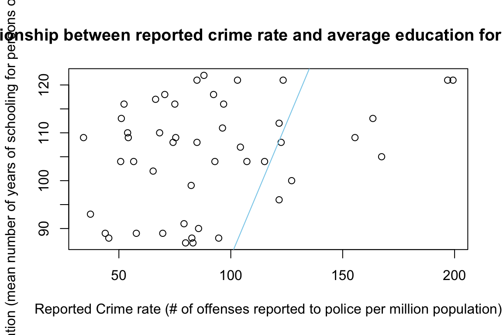
cor(dat.crime$R, dat.crime$Ed)## [1] 0.3228349Looking at the scatter plot, it does not appear that there is a linear relationship between the reported crime rate and average education. In addition, the correlation between the two variables is only 0.3228349. The blue line on the scatter plot shows that there is a positive correlation between the number of offenses reported to police (per million population) and the mean number of years of schooling for persons of ages 25+. A correlation of 0.3228 corresponds to a weak, positive linear relationship. Looking at the scatter plot and the correlation value, I would start to conclude that a linear model might not be the best way to to describe the relationship between these two variables.
- Regress reported crime rate (y) on average education (x) and call this linear model
crime.lmand write the summary of the regression by using this code, which makes it look a little nicer{r, eval=FALSE} kable(summary(crime.lm)$coef, digits = 2). (y~x: y regressed on x)
crime.lm <-lm(formula=R~Ed, data = dat.crime)
summary(crime.lm)##
## Call:
## lm(formula = R ~ Ed, data = dat.crime)
##
## Residuals:
## Min 1Q Median 3Q Max
## -60.061 -27.125 -4.654 17.133 91.646
##
## Coefficients:
## Estimate Std. Error t value Pr(>|t|)
## (Intercept) -27.3967 51.8104 -0.529 0.5996
## Ed 1.1161 0.4878 2.288 0.0269 *
## ---
## Signif. codes: 0 '***' 0.001 '**' 0.01 '*' 0.05 '.' 0.1 ' ' 1
##
## Residual standard error: 37.01 on 45 degrees of freedom
## Multiple R-squared: 0.1042, Adjusted R-squared: 0.08432
## F-statistic: 5.236 on 1 and 45 DF, p-value: 0.02688kable(summary(crime.lm)$coef, digits = 2)| Estimate | Std. Error | t value | Pr(>|t|) | |
|---|---|---|---|---|
| (Intercept) | -27.40 | 51.81 | -0.53 | 0.60 |
| Ed | 1.12 | 0.49 | 2.29 | 0.03 |
- Are the four assumptions of linear regression satisfied? To answer this, draw the relevant plots. (Write a maximum of one sentence per assumption.)
plot(dat.crime$Ed, crime.lm$residuals, ylim = c(-50,50), main = "Residuals vs. x", xlab = "x, average years of education", ylab="Residuals" )
abline(h=0, lty="dashed")To check for error independence (which technically is not possible), we can look at the plot of residuals against x and check for patterns; there are not any patterns in the residuals vs. x graph, so we can assume that the independence assumption is met (assumption2).
plot(crime.lm, which = 1)
Looking at the residuals vs. fitted plot, the scatter plot smoother line that shows the average value of the residuals at each value of the fitted value, is relatively flat and close to the dashed line, which means that there is no noticeable non-linear trend to the residuals and they appear to be equally variable across the range of fitted values so we can assume that linearity assumption is met (assumption1).
plot(crime.lm, which=3)The red line is approximately horizontal and there aren’t any significant trends which means our residuals have constant variance, so the equal variance assumption is met (assumption3).
plot(crime.lm, which = 5)plot(crime.lm, which=2)The Normal QQ plot shows that the tails do not lie along the line as well as they could, but most of the points fall along the line, so we can assume normality (assumption4).
- Is the relationship between reported crime and average education statistically significant? Report the estimated coefficient of the slope, the standard error, and the p-value. What does it mean for the relationship to be statistically significant?
summary(crime.lm)##
## Call:
## lm(formula = R ~ Ed, data = dat.crime)
##
## Residuals:
## Min 1Q Median 3Q Max
## -60.061 -27.125 -4.654 17.133 91.646
##
## Coefficients:
## Estimate Std. Error t value Pr(>|t|)
## (Intercept) -27.3967 51.8104 -0.529 0.5996
## Ed 1.1161 0.4878 2.288 0.0269 *
## ---
## Signif. codes: 0 '***' 0.001 '**' 0.01 '*' 0.05 '.' 0.1 ' ' 1
##
## Residual standard error: 37.01 on 45 degrees of freedom
## Multiple R-squared: 0.1042, Adjusted R-squared: 0.08432
## F-statistic: 5.236 on 1 and 45 DF, p-value: 0.02688The estimated coefficient for the slope for this relationship is 1.1161. The standard error for slope is 0.4878 and the standard error for the intercept is 51.8104. The p-value for the slope is 0.0269 and it is much larger for the intercept, 0.5996. The p-value for the intercept is not significant.
How are reported crime and average education related? In other words, for every unit increase in average education, how does reported crime rate change (per million) per state? The slope term in this model is saying that for every 1 year of average education increase, the number of offenses reported to police per million population goes up by by 1.1161. However, we are not saying that there is a direct cause and effect in which when average education increases, the amount of offenses reported to police(per million population) has to also increase.
Can you conclude that if individuals were to receive more education, then crime will be reported more often? Why or why not?
No, I cannot conclude that if individuals were to receive more education, then crime will be reported more often. The p-values are not significant enough to reject the null hypothesis. The null hypothesis states that the slope is zero, meaning that there is no relationship between average education and the number of offenses reported to the police.
Exam 2
Instructions
Create a folder in your computer (a good place would be under Crim 250, Exams).
Download the dataset from the Canvas website (sim.data.csv) onto that folder, and save your Exam 2.Rmd file in the same folder.
Data description: This dataset provides (simulated) data about 200 police departments in one year. It contains information about the funding received by the department as well as incidents of police brutality. Suppose this dataset (sim.data.csv) was collected by researchers to answer this question: “Does having more funding in a police department lead to fewer incidents of police brutality?”
Codebook:
- funds: How much funding the police department received in that year in millions of dollars.
- po.brut: How many incidents of police brutality were reported by the department that year.
- po.dept.code: Police department code
Problem 1: EDA (10 points)
Describe the dataset and variables. Perform exploratory data analysis for the two variables of interest: funds and po.brut.
dat <- read.csv(file = 'sim.data.csv')
summary(dat)## po.dept.code funds po.brut
## Min. : 1.00 Min. :21.40 Min. : 0.00
## 1st Qu.: 50.75 1st Qu.:51.67 1st Qu.:14.00
## Median :100.50 Median :59.75 Median :19.00
## Mean :100.50 Mean :61.04 Mean :18.14
## 3rd Qu.:150.25 3rd Qu.:72.17 3rd Qu.:22.00
## Max. :200.00 Max. :99.70 Max. :29.00hist(dat$funds, main="Histogram of Funding (millions of dollars)", xlab="Amount of funding received per year", ylab="Frequency", xlim=c(0,100), ylim=c(0,100),col="yellow")hist(dat$po.brut, main="Incidents of police brutality", xlab="Number of Incidents", ylab="Frequency", xlim=c(0,50), ylim=c(0,100),col="red", breaks=12)This is a simulated data set about 200 police departments, each police department is coded and that is described by the variable po.brut. This data set contains information about the funding that the department received (funds) in millions of dollars and the incidents of police brutality that were reported by the department in that year (po.brut). Both the variables funds and po.brut are quantitative numerical variables that can be best visualized using quantitative data analysis plots such as histograms. The average number of funds that police departments receive is $61.04 million dollars. The histogram for funding appears to be have a relatively normal bell curve shape, with no right or left skew. The average number of police brutality incidents is ~18, and the maximum number of incidents at any of the 200 police departments is 29 and the minimum amount of incidents at any of the departments is 0 incidents. The histogram of police brutality incidents has more of a left skew, which is a better thing because those are the smaller values of incidents.
Problem 2: Linear regression (30 points)
- Perform a simple linear regression to answer the question of interest. To do this, name your linear model “reg.output” and write the summary of the regression by using “summary(reg.output)”.
reg.output <- lm(formula = po.brut~funds, data = dat)
summary(reg.output)##
## Call:
## lm(formula = po.brut ~ funds, data = dat)
##
## Residuals:
## Min 1Q Median 3Q Max
## -3.9433 -0.2233 0.2544 0.5952 1.1803
##
## Coefficients:
## Estimate Std. Error t value Pr(>|t|)
## (Intercept) 40.543069 0.282503 143.51 <2e-16 ***
## funds -0.367099 0.004496 -81.64 <2e-16 ***
## ---
## Signif. codes: 0 '***' 0.001 '**' 0.01 '*' 0.05 '.' 0.1 ' ' 1
##
## Residual standard error: 0.9464 on 198 degrees of freedom
## Multiple R-squared: 0.9712, Adjusted R-squared: 0.971
## F-statistic: 6666 on 1 and 198 DF, p-value: < 2.2e-16answer
- Report the estimated coefficient, standard error, and p-value of the slope. Is the relationship between funds and incidents statistically significant? Explain.
The estimated coefficient (slope) is -0.367099. This slope means that for every 1 million dollar increase in funding, the number of police brutality incidents on average would decrease by 0.367099. The standard error for the slope is 0.004496 and the standard error for the intercept is 0.282503. The p-value of the slope is 2x10^-16, which we can see from the significant codes is very significant. Three stars means that the p-value is highly signficiant. The extremely small p-values express for both slope and intercept express that the relationship between funding and incidents is very statistically significant.
- Draw a scatterplot of po.brut (y-axis) and funds (x-axis). Right below your plot command, use abline to draw the fitted regression line, like this:
# Remember to remove eval=FALSE!!
plot(dat$funds,dat$po.brut, main = "Relationship between Funding and Police Brutality Incidents", xlab = "Funding (in millions of dollars)", ylab="Incidents of Police Brutality" )
abline(reg.output, col = "red", lwd=2)
cor(dat$funds, dat$po.brut)## [1] -0.9854706Does the line look like a good fit? Why or why not?
Yes the line does look like a good fit for the data. The relationship between funding and incidents of police brutality looks linear tells me that a simple linear regression is a good model to fit this data set. The scatterplot points appear to fall very well along the linear regression line. The red line tells us that there is a strong negative correlation between police funding and police brutality incidents. In addition, the correlation between these two variables is -0.9854706, which also supports that there is a highly negative correlation between funding and police brutality incidents.
- Are the four assumptions of linear regression satisfied? To answer this, draw the relevant plots. (Write a maximum of one sentence per assumption.) If not, what might you try to do to improve this (if you had more time)?
#Linearity Assumption
plot(reg.output, which=1)Looking at the residuals vs. fitted plot, the scatter plot smoother line that shows the average value of the residuals at each value of the fitted value, is not very flat, which means that there could be a non-linear trend to the residual, and the residuals seem to be closely following this line, meaning there could be a trend in the residuals and the linearity assumption is not necessarily met (assumption1).
#Independence Assumption
plot(dat$funds, reg.output$residuals, ylim=c(-15,15), main="Residuals vs. x", xlab="x, Funding in million of dollars", ylab="Residuals")
abline(h = 0, lty="dashed")To check for error independence (which technically is not possible), we can look at the plot of residuals against x and check for patterns; the residuals have a slight hill and follow a curved pattern, so we can assume that the independence assumption is not met (assumption2).
#Equal Variance Assumption
plot(reg.output, which=3) The red line is clearly not flat and horizontal and there are significant trends on this plot, which means that the residuals/errors have non-constant variance and the equal variance assumption (assumption3) is not met.
The red line is clearly not flat and horizontal and there are significant trends on this plot, which means that the residuals/errors have non-constant variance and the equal variance assumption (assumption3) is not met.
#Normal Population Assumption
plot(reg.output, which=2)The Normal QQ plot shows that the points fall along in the middle of the graph, but curve off in the extremities, the tails do not lie along the line as well as they could, especially the lower left corner of the plot, so I cannot assume that the normality assumption is met (assumption4).
Because the four assumptions are not met, but there seems to be a high negative linear correlation between the two variables, if I had more time I would before some sort of transformation to achieve linearity and fix my diagnostic plots. Transforming the data using one of the possible transformation helps fix the diagnostics. To achieve normality, I could determine which transformation to use by using the Box-Cox method. If I had more time to transform the data, I would run the code boxcox(reg.output) and look at the lambda value. The lambda value would tell me which transformation to use fix my data. With variables like wage and funding, it might be better to do log(funds), however this is just a hypothesis. I would have to perform the actual transformation to determine which would work best.
- Answer the question of interest based on your analysis.
The four assumptions of linearity are not met, however I do think that if I were to be able to perform one of the linear transformations, this data could be able to meet the assumptions of linearity. Perhaps the linear model is not the best fit for this data, however, this would require much more analysis. The correlation coefficient showed strong, negative linear correlation. The R-squared value is extremely high as well. The p-values are significant enough to reject the null hypothesis. The null hypothesis states that the slope is zero, meaning that there is no relationship between funding (in millions) and number of police brutality incidents. It is a little confusing because the the diagnostic plots look terrible, but the correlation, p-values, and scatter plot make me believe that there is a strong connection between the amount of funding in millions of dollars and incidents of police brutality. I think that I can answer the question of interest (whether or not having more funding affects the number of incidents). Based on my analysis, I can give a preliminary answer and say that there is a negative relationship between funding and the number of police brutality incidents, when there is more funding in a department, it is likely that the number of police brutality incidents would decrease (based on the slope and negative correlation). However, more analysis should be done and data transformations should be done to really determine whether or not there is a strong enough relationship between these two variables.
Problem 3: Data ethics (10 points)
Describe the dataset. Considering our lecture on data ethics, what concerns do you have about the dataset? Once you perform your analysis to answer the question of interest using this dataset, what concerns might you have about the results?
The data set is simulated and does not include information on 200 real police departments. This is a major major concern in interpreting the results from the data set. How was this data set made? It is important to know how a data set is collected, whether it is simulated or real. It is important to know this in interpreting results. However, because this is not a real data set, there are not any major ethical concerns with this exact data set. If we were to have a data set with real information, it would be important to know if there was consent involved, if there was any bias in taking the sample, how the sample data was gathered (methodology). There is a great deal to think about in concerning data ethics, but our sample is nice because it is simulated and does not have data on real people. Lastly, a side note, I feel that it would be important to gather data on real police departments in order to interpret the results of this data set. In addition, it would be helpful to look at different variables as well to see if there are strong correlations between any other variables such as urban location and racial distribution.
Assignment 4
ggplot2::mpg## # A tibble: 234 × 11
## manufacturer model displ year cyl trans drv cty hwy fl class
## <chr> <chr> <dbl> <int> <int> <chr> <chr> <int> <int> <chr> <chr>
## 1 audi a4 1.8 1999 4 auto… f 18 29 p comp…
## 2 audi a4 1.8 1999 4 manu… f 21 29 p comp…
## 3 audi a4 2 2008 4 manu… f 20 31 p comp…
## 4 audi a4 2 2008 4 auto… f 21 30 p comp…
## 5 audi a4 2.8 1999 6 auto… f 16 26 p comp…
## 6 audi a4 2.8 1999 6 manu… f 18 26 p comp…
## 7 audi a4 3.1 2008 6 auto… f 18 27 p comp…
## 8 audi a4 quattro 1.8 1999 4 manu… 4 18 26 p comp…
## 9 audi a4 quattro 1.8 1999 4 auto… 4 16 25 p comp…
## 10 audi a4 quattro 2 2008 4 manu… 4 20 28 p comp…
## # … with 224 more rowsThis is the mpg data frame for the data set we are looking at. It is a collection of variables (columns) and observations (rows). mpg contains observations collected by the US Environmental Protection Agency on 38 models of car.
?mpgThis code tells us more about the data set.
library(ggplot2)
ggplot(data = mpg) +
geom_point(mapping = aes(x = displ, y = hwy)) This plot shows the relationship between engine size (displ) and fuel efficiency (hwy). From this, we can see that there is a negative association between the two variables. So this implies that when a car has a bigger engine,it uses more fuel. ggplot(data=mpg) creates an empty graph and you have to add more layers with the other code.
This plot shows the relationship between engine size (displ) and fuel efficiency (hwy). From this, we can see that there is a negative association between the two variables. So this implies that when a car has a bigger engine,it uses more fuel. ggplot(data=mpg) creates an empty graph and you have to add more layers with the other code.
Aestetic Mappings
There is a plot in which there are points that fall outside of the linear trend (in red). Those cars have higher mileage that expected. A third variable can be added to a scatter plot mapping it to an aesthetic. Aesthetics include things like the size, the shape, or the color of your points. Can use the world level to describe aesthetic properties.
ggplot(data = mpg) +
geom_point(mapping = aes(x = displ, y = hwy, color = class)) This new scatter plot added a third variable, class. By looking at the color of the dot, we can determine the class of each vehicle. The points that do not follow the linear trend are 2 seater vehicles. To map an aesthetic to a variable, associate the name of the aesthetic to the name of the variable inside aes(). Scaling is the process that assigns a unique value level of the aesthetic to a unique value.
This new scatter plot added a third variable, class. By looking at the color of the dot, we can determine the class of each vehicle. The points that do not follow the linear trend are 2 seater vehicles. To map an aesthetic to a variable, associate the name of the aesthetic to the name of the variable inside aes(). Scaling is the process that assigns a unique value level of the aesthetic to a unique value.
We can also map the variable class to show as different sizes instead of color.
ggplot(data = mpg) +
geom_point(mapping = aes(x = displ, y = hwy, size = class)) We got a warning, because mapping an unordered variable (class) to an ordered aesthetic(size) is not a good idea.
We got a warning, because mapping an unordered variable (class) to an ordered aesthetic(size) is not a good idea.
We can also map class to the alpha esthetic, which controls the transparency of the points.
ggplot(data = mpg) +
geom_point(mapping = aes(x = displ, y = hwy, alpha = class)) When plotting this, I got a warning signal. Warning: Using alpha for a discrete variable is not advised. ggplot2 will only use six shapes at a time. By default, additional groups will go unplotted when you use the shape aesthetic. The x and y are aesthetics itself, the axis act as a legend.
When plotting this, I got a warning signal. Warning: Using alpha for a discrete variable is not advised. ggplot2 will only use six shapes at a time. By default, additional groups will go unplotted when you use the shape aesthetic. The x and y are aesthetics itself, the axis act as a legend.
We can also set the aesthetic properties of the graph ourselves, for example, by making all of the points blue.
ggplot(data = mpg) +
geom_point(mapping = aes(x = displ, y = hwy), color = "blue") This does not tell anything about the variables, but it allows you to change the appearance of the plot. When you manually changing the aesthetics, they go on the outside of aes(). You can change the color, the size of the points, and the shape of a point (by using a number).
This does not tell anything about the variables, but it allows you to change the appearance of the plot. When you manually changing the aesthetics, they go on the outside of aes(). You can change the color, the size of the points, and the shape of a point (by using a number).
Common Problems
One common issue with ggplot2 is putting the + in the wrong place. The + must come at the end of the line, not the start.
Facets
You can split your plot into facets, which are subplots that each display one subset of the data. To facet your plot by a single variable, you can use facet_wrap(). The first argument has to be a formula, which is ~ followed by the variable name.
ggplot(data = mpg) +
geom_point(mapping = aes(x = displ, y = hwy)) +
facet_wrap(~ class, nrow = 2) You can also plot on the combination of two variables and add the code facet_grid(). This is also contains a formula: variable 1 ~ variable 2.
You can also plot on the combination of two variables and add the code facet_grid(). This is also contains a formula: variable 1 ~ variable 2.
ggplot(data = mpg) +
geom_point(mapping = aes(x = displ, y = hwy)) +
facet_grid(drv ~ cyl) ### Geometric Objects Geoms are the geometrical object that a plot uses to represent data. For example, bar charts use bar geoms. You can change the type of geom being used in your plot.
### Geometric Objects Geoms are the geometrical object that a plot uses to represent data. For example, bar charts use bar geoms. You can change the type of geom being used in your plot.
ggplot(data = mpg) +
geom_point(mapping = aes(x = displ, y = hwy))
ggplot(data = mpg) +
geom_smooth(mapping = aes(x = displ, y = hwy)) Geom_point uses points and geom_smooth uses smooth representation.
Geom_point uses points and geom_smooth uses smooth representation.
You can change the type of line that is used in a geom_smooth graph.
ggplot(data = mpg) +
geom_smooth(mapping = aes(x = displ, y = hwy, linetype = drv)) Geom_smooth() separates the cars based on their drv value (drivetrain). 4=four wheel drive, f = front wheel drive, and r = rear wheel drive.
Geom_smooth() separates the cars based on their drv value (drivetrain). 4=four wheel drive, f = front wheel drive, and r = rear wheel drive.
Many geoms use a single geometric display to display multiple rows of data. You also can se the group aesthetic to a categorical variable to draw multiple objects.
ggplot(data = mpg) +
geom_smooth(mapping = aes(x = displ, y = hwy))
ggplot(data = mpg) +
geom_smooth(mapping = aes(x = displ, y = hwy, group = drv))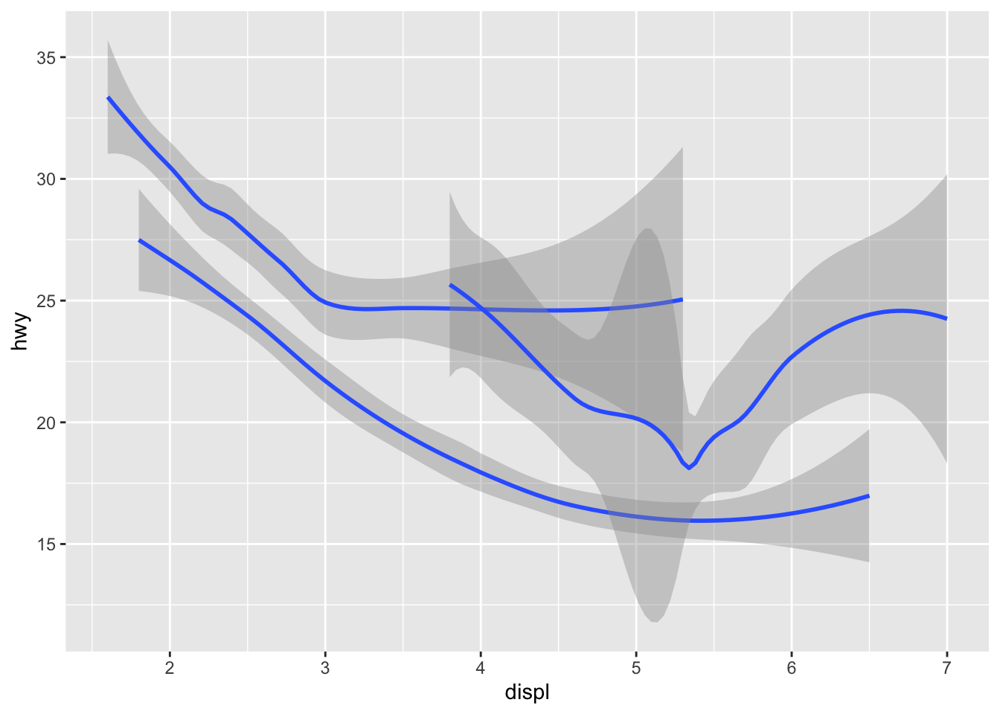
ggplot(data = mpg) +
geom_smooth(
mapping = aes(x = displ, y = hwy, color = drv),
show.legend = FALSE
) You also can display multiple geoms in the same plot by adding different geo functions to ggplot. Below, we are adding a point geom and smooth geom to our plot.
You also can display multiple geoms in the same plot by adding different geo functions to ggplot. Below, we are adding a point geom and smooth geom to our plot.
ggplot(data = mpg) +
geom_point(mapping = aes(x = displ, y = hwy)) +
geom_smooth(mapping = aes(x = displ, y = hwy)) However, since you are looking at the same variables, there is some duplication in the code. You can simplify the code by writing your code like this, instead of the code above:
However, since you are looking at the same variables, there is some duplication in the code. You can simplify the code by writing your code like this, instead of the code above:
ggplot(data = mpg, mapping = aes(x = displ, y = hwy)) +
geom_point() +
geom_smooth() The same plot is produced, just with a simpler code.
The same plot is produced, just with a simpler code.
You also can display different aesthetics in different layers. For example, in the plot below, we are displaying the class as different colors in the point geom layer.
ggplot(data = mpg, mapping = aes(x = displ, y = hwy)) +
geom_point(mapping = aes(color = class)) +
geom_smooth() ### Statistical Transformation Bar charts
### Statistical Transformation Bar charts
ggplot(data = diamonds) +
geom_bar(mapping = aes(x = cut)) This is a simple barplot that shows the cut of the diamond and the count. It is using counts from something called stat. You can usually use geoms and stats interchangeably. The same plot can be produced by changing the code slightly:
This is a simple barplot that shows the cut of the diamond and the count. It is using counts from something called stat. You can usually use geoms and stats interchangeably. The same plot can be produced by changing the code slightly:
ggplot(data = diamonds) +
stat_count(mapping = aes(x = cut)) We also can display a bar chart of proportion, rather than count, using the following code:
We also can display a bar chart of proportion, rather than count, using the following code:
ggplot(data = diamonds) +
geom_bar(mapping = aes(x = cut, y = stat(prop), group = 1))We are manipulating our data using this stat function, and it is important to know what we are doing to it. We can use stat_summary() to summarize the y values for each x value:
ggplot(data = diamonds) +
stat_summary(
mapping = aes(x = cut, y = depth),
fun.min = min,
fun.max = max,
fun = median
)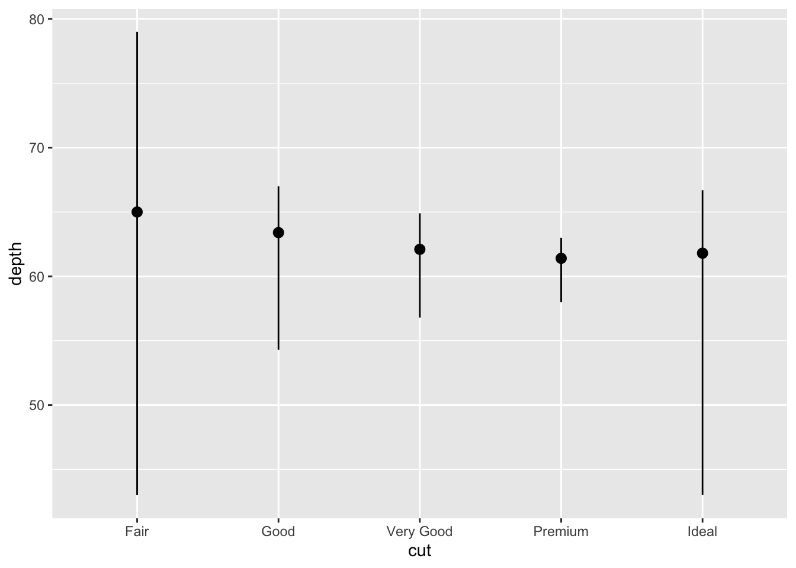
Position adjustments
We can also color a bar chart by using the code fill:
ggplot(data = diamonds) +
geom_bar(mapping = aes(x = cut, colour = cut))
ggplot(data = diamonds) +
geom_bar(mapping = aes(x = cut, fill = cut)) The code colour is telling R to only have the edges of the bars colored, but the code fill is telling R to produce a plot in which the entire bar is colored.
The code colour is telling R to only have the edges of the bars colored, but the code fill is telling R to produce a plot in which the entire bar is colored.
You can add another variable to make a stacked barplot. In this case, every colored rectangle represents a combination of cut and clarity:
ggplot(data = diamonds) +
geom_bar(mapping = aes(x = cut, fill = clarity))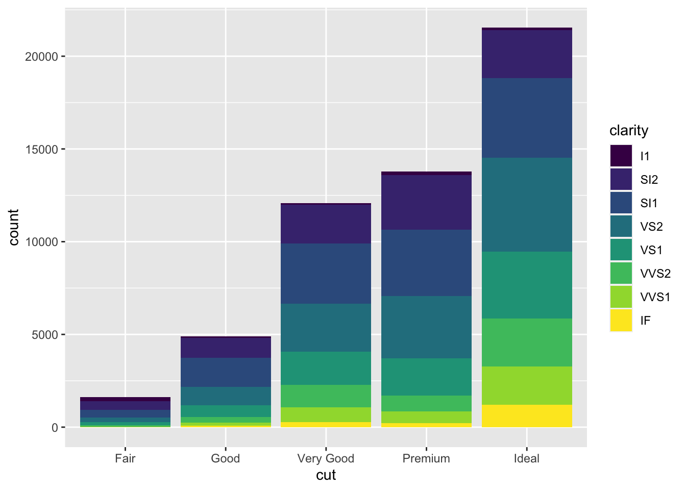 If you do not want a stacked barplot, but still want to look at multiple variables you can use the code identity, dodge, or fill.
Identity is not super useful for bar plots.
ggplot(data = diamonds, mapping = aes(x = cut, fill = clarity)) +
geom_bar(alpha = 1/5, position = "identity")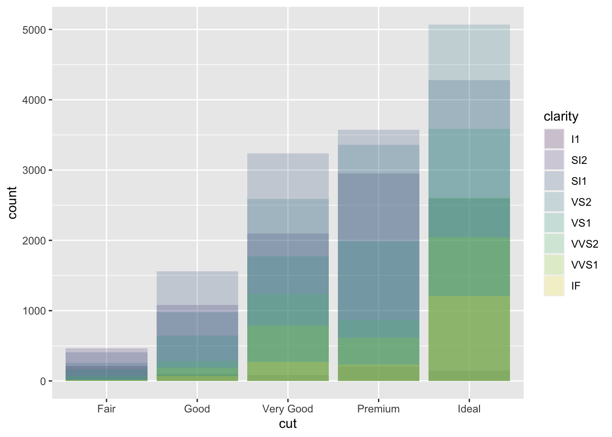
ggplot(data = diamonds, mapping = aes(x = cut, colour = clarity)) +
geom_bar(fill = NA, position = "identity") The bars overlap, so to see the overlap, we have to make the bars either slightly transparent (set alpha to a low number) or completely transparent (fill = NA).
The bars overlap, so to see the overlap, we have to make the bars either slightly transparent (set alpha to a low number) or completely transparent (fill = NA).
position = “fill” makes each set of stacked bars the same hieght and you can look at proportions.
ggplot(data = diamonds) +
geom_bar(mapping = aes(x = cut, fill = clarity), position = "fill") position = “dodge” places overlapping objects directly beside one another and you are able to better compare individual values.
position = “dodge” places overlapping objects directly beside one another and you are able to better compare individual values.
ggplot(data = diamonds) +
geom_bar(mapping = aes(x = cut, fill = clarity), position = "dodge")
For scatterplots, there is another adjustment that can be made to the plot to avoid overplotting. We want to be able to see where the mass of the data is and the position = “jitter”.
ggplot(data = mpg) +
geom_point(mapping = aes(x = displ, y = hwy), position = "jitter")Coordinate Systems
We can plot coordinate systems using ggplot. The default is a Cartesian coordinate system. One function that we can use is coord_flip() which switches the x and y axes.
ggplot(data = mpg, mapping = aes(x = class, y = hwy)) +
geom_boxplot()
ggplot(data = mpg, mapping = aes(x = class, y = hwy)) +
geom_boxplot() +
coord_flip()
coord_quickmap() sets the aspect ratio correctly for maps.
nz <- map_data("nz")
ggplot(nz, aes(long, lat, group = group)) +
geom_polygon(fill = "white", colour = "black")
ggplot(nz, aes(long, lat, group = group)) +
geom_polygon(fill = "white", colour = "black") +
coord_quickmap() The function coord_polar() uses polar coordinates.
The function coord_polar() uses polar coordinates.
bar <- ggplot(data = diamonds) +
geom_bar(
mapping = aes(x = cut, fill = cut),
show.legend = FALSE,
width = 1
) +
theme(aspect.ratio = 1) +
labs(x = NULL, y = NULL)
bar + coord_flip()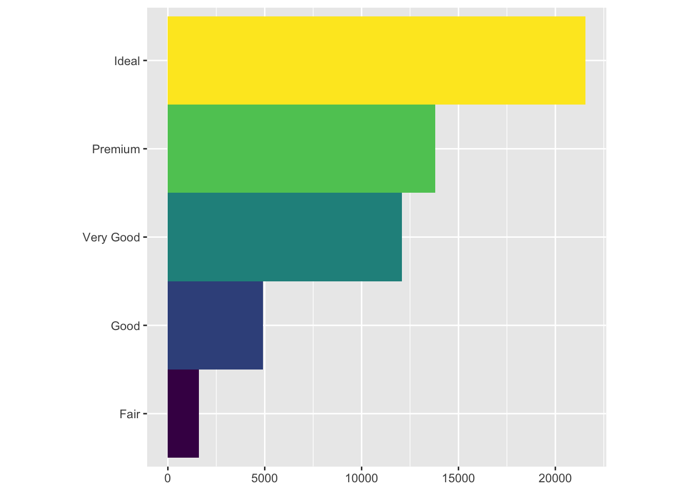
bar + coord_polar()
Graphics for Communication (Chapter 28)
The best place to start when turning an exploratory graphic into a expository graphic is with good labels. Add labels with the labs() function. The examplle below adds a plot title.
ggplot(mpg, aes(displ, hwy)) +
geom_point(aes(color = class)) +
geom_smooth(se = FALSE) +
labs(title = "Fuel efficiency generally decreases with engine size") You can also add subtitles using code subtitle and the code caption to add text at the bottom right of the plot:
You can also add subtitles using code subtitle and the code caption to add text at the bottom right of the plot:
ggplot(mpg, aes(displ, hwy)) +
geom_point(aes(color = class)) +
geom_smooth(se = FALSE) +
labs(
title = "Fuel efficiency generally decreases with engine size",
subtitle = "Two seaters (sports cars) are an exception because of their light weight",
caption = "Data from fueleconomy.gov"
) You can change the x and y labels too, use the code labs() to change the axis and legend titles:
You can change the x and y labels too, use the code labs() to change the axis and legend titles:
ggplot(mpg, aes(displ, hwy)) +
geom_point(aes(colour = class)) +
geom_smooth(se = FALSE) +
labs(
x = "Engine displacement (L)",
y = "Highway fuel economy (mpg)",
colour = "Car type"
)
Annotations
You can also label individual observations or groups of observations. geom_text() is similar to geom_point(), but it has an additional aesthetic: label. This code makes it possible to add textual labels to plots.
library('dplyr')
library(ggplot2)Needed to download the piping option.
best_in_class <- mpg %>%
group_by(class) %>%
filter(row_number(desc(hwy)) == 1)
ggplot(mpg, aes(displ, hwy)) +
geom_point(aes(colour = class)) +
geom_text(aes(label = model), data = best_in_class) geom_label() which draws a rectangle behind the text, making it easier to read our plot.
geom_label() which draws a rectangle behind the text, making it easier to read our plot.
ggplot(mpg, aes(displ, hwy)) +
geom_point(aes(colour = class)) +
geom_label(aes(label = model), data = best_in_class, nudge_y = 2, alpha = 0.5)
There is overlap in the labels, so we can use the ggrepel package, which adjusts labels so they do not overlap.
library('ggrepel')ggplot(mpg, aes(displ, hwy)) +
geom_point(aes(colour = class)) +
geom_point(size = 3, shape = 1, data = best_in_class) +
ggrepel::geom_label_repel(aes(label = model), data = best_in_class)I had to download the package, ggrepel. You can also replace the legend with labels placed on the plot, this is show in the below code and plot:
class_avg <- mpg %>%
group_by(class) %>%
summarise(
displ = median(displ),
hwy = median(hwy)
)
#> `summarise()` ungrouping output (override with `.groups` argument)
ggplot(mpg, aes(displ, hwy, colour = class)) +
ggrepel::geom_label_repel(aes(label = class),
data = class_avg,
size = 6,
label.size = 0,
segment.color = NA
) +
geom_point() +
theme(legend.position = "none")You can also add a single label to the plot, in the corner of the plot. You can create a new data frame using the code (summarise()) to compute the max and min values of the variables x and y.
label <- mpg %>%
summarise(
displ = max(displ),
hwy = max(hwy),
label = "Increasing engine size is \nrelated to decreasing fuel economy."
)
ggplot(mpg, aes(displ, hwy)) +
geom_point() +
geom_text(aes(label = label), data = label, vjust = "top", hjust = "right")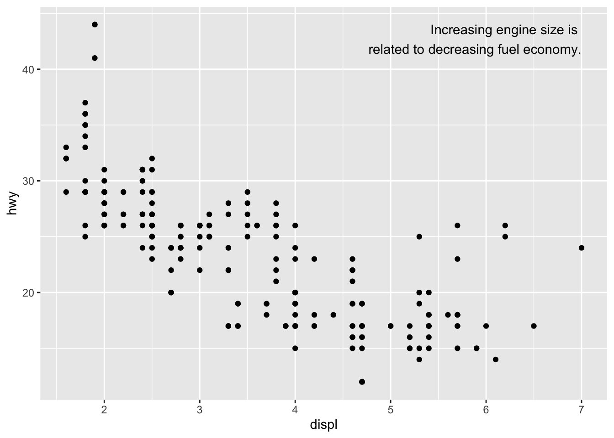
label <- tibble(
displ = Inf,
hwy = Inf,
label = "Increasing engine size is \nrelated to decreasing fuel economy."
)
ggplot(mpg, aes(displ, hwy)) +
geom_point() +
geom_text(aes(label = label), data = label, vjust = "top", hjust = "right") Putting the text in the exact corner of the plot - use +Inf and -Inf:
Putting the text in the exact corner of the plot - use +Inf and -Inf:
label <- tibble(
displ = Inf,
hwy = Inf,
label = "Increasing engine size is \nrelated to decreasing fuel economy."
)
ggplot(mpg, aes(displ, hwy)) +
geom_point() +
geom_text(aes(label = label), data = label, vjust = "top", hjust = "right") There are other ways to annotate your plots: - geom_hline() and geom_vline() to add reference lines. - geom_rect() to draw a rectangle around points of interest. The boundaries of the rectangle are defined by aesthetics xmin, xmax, ymin, ymax. -geom_segment() with the arrow argument to draw attention to a point with an arrow. Use aesthetics x and y to define the starting location, and xend and yend to define the end location.
There are other ways to annotate your plots: - geom_hline() and geom_vline() to add reference lines. - geom_rect() to draw a rectangle around points of interest. The boundaries of the rectangle are defined by aesthetics xmin, xmax, ymin, ymax. -geom_segment() with the arrow argument to draw attention to a point with an arrow. Use aesthetics x and y to define the starting location, and xend and yend to define the end location.
Scales
It is important to adjust the scales if necessary, to make your plots look better. You can adjust the axis ticks and legend keys. The code breaks controls the position of the ticks. Labels controls the text label associated with the tick.
ggplot(mpg, aes(displ, hwy)) +
geom_point() +
scale_y_continuous(breaks = seq(15, 40, by = 5))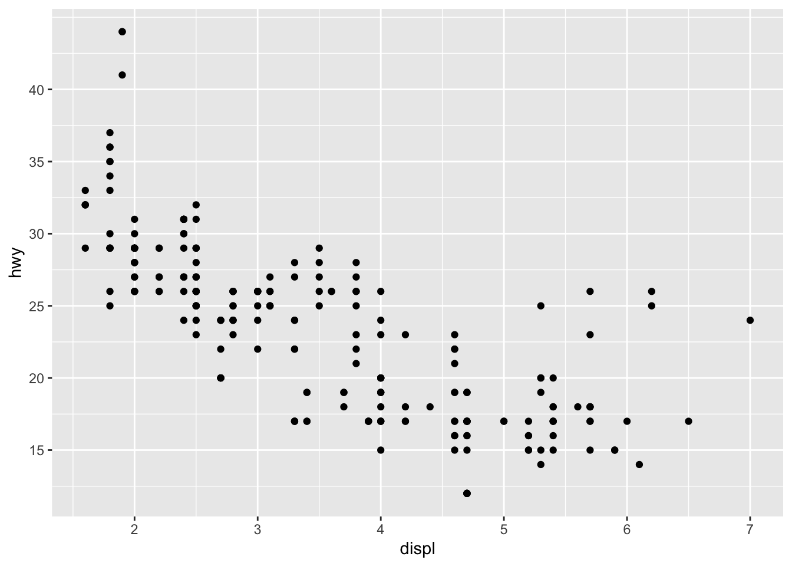 You can remove the labels from an axis, you use labels = NULL.
ggplot(mpg, aes(displ, hwy)) +
geom_point() +
scale_x_continuous(labels = NULL) +
scale_y_continuous(labels = NULL)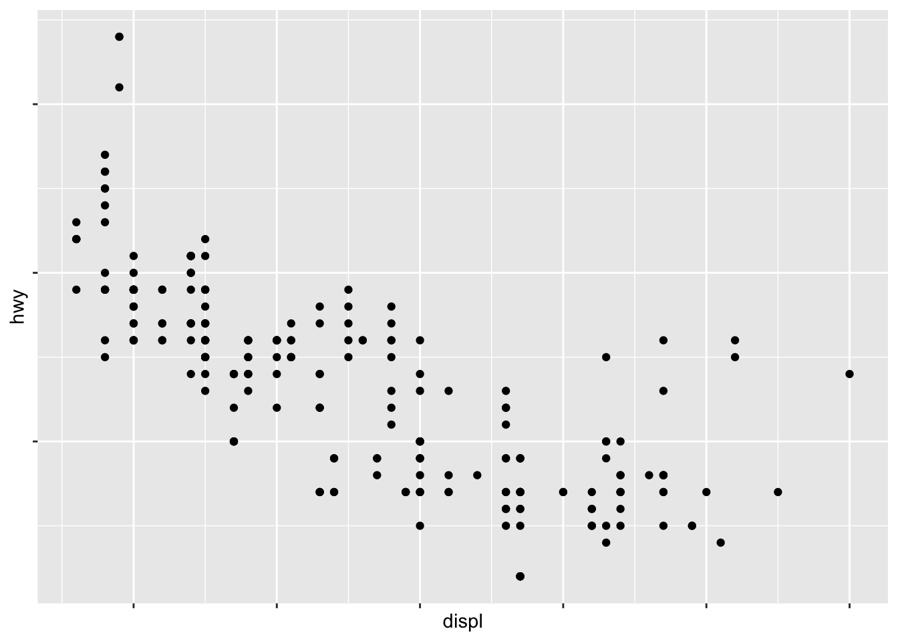 Axis and legends are known as guides as well. Axes are used for x and y aesthetics.
You can use breaks when you have not that many data points and want to highlight where observations occur:
presidential %>%
mutate(id = 33 + row_number()) %>%
ggplot(aes(start, id)) +
geom_point() +
geom_segment(aes(xend = end, yend = id)) +
scale_x_date(NULL, breaks = presidential$start, date_labels = "'%y")
You can change the position of the legends as well. To control where the legend is, you can use theme(). Theme code controls non-data parts of a plot. theme(legend.position = ? ) controls where the legend is drawn. If you put legend.position = none, the legend is removed.
base <- ggplot(mpg, aes(displ, hwy)) +
geom_point(aes(colour = class))
base + theme(legend.position = "left")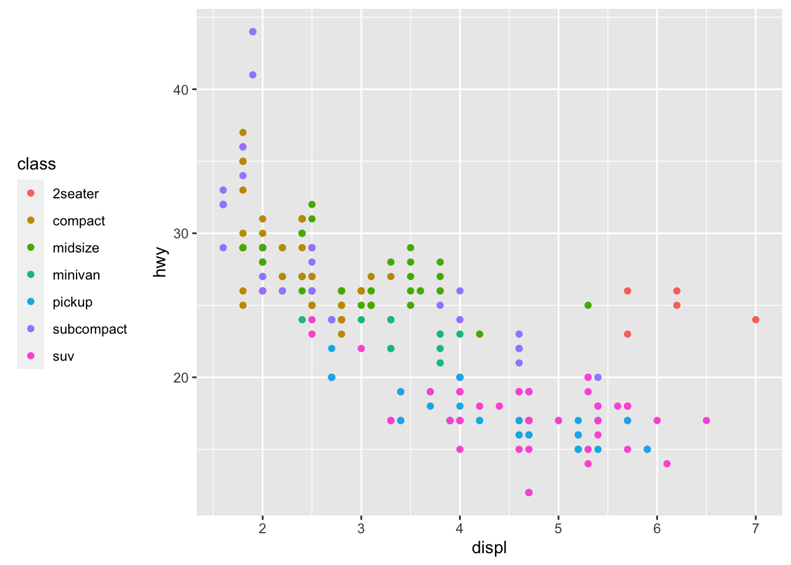
base + theme(legend.position = "top")
base + theme(legend.position = "bottom")base + theme(legend.position = "right") # the default
base + theme(legend.position = "none") In addition, you can make other changes to a legend by using guides() along with guide_legend() and guide_colourbar(). -nrow: controls the number of rows the legend uses
ggplot(mpg, aes(displ, hwy)) +
geom_point(aes(colour = class)) +
geom_smooth(se = FALSE) +
theme(legend.position = "bottom") +
guides(colour = guide_legend(nrow = 1, override.aes = list(size = 4)))
#> `geom_smooth()` using method = 'loess' and formula 'y ~ x'Replacing the scale
ggplot(diamonds, aes(carat, price)) +
geom_bin2d()
ggplot(diamonds, aes(log10(carat), log10(price))) +
geom_bin2d() We want to change this so that the axes are now labeled with the transformed values. We can change this so that the transformation is not in the aesthetic mapping, but instead in the scale:
We want to change this so that the axes are now labeled with the transformed values. We can change this so that the transformation is not in the aesthetic mapping, but instead in the scale:
ggplot(diamonds, aes(carat, price)) +
geom_bin2d() +
scale_x_log10() +
scale_y_log10()You can change the color that is being used as well.
ggplot(mpg, aes(displ, hwy)) +
geom_point(aes(color = drv))
ggplot(mpg, aes(displ, hwy)) +
geom_point(aes(color = drv)) +
scale_colour_brewer(palette = "Set1")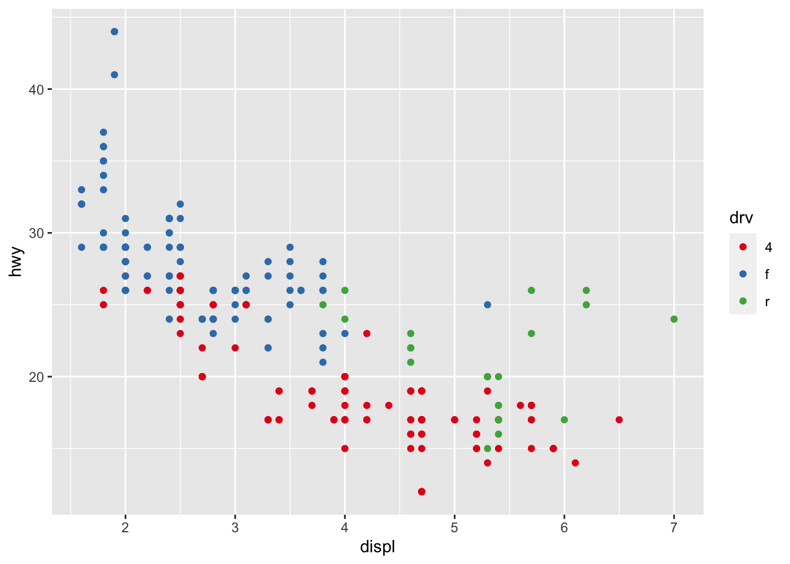
To make it even more distinguishable between the types of points, you can use shapes. The following code changes the shape of the dots:
ggplot(mpg, aes(displ, hwy)) +
geom_point(aes(color = drv, shape = drv)) +
scale_colour_brewer(palette = "Set1")
presidential %>%
mutate(id = 33 + row_number()) %>%
ggplot(aes(start, id, colour = party)) +
geom_point() +
geom_segment(aes(xend = end, yend = id)) +
scale_colour_manual(values = c(Republican = "red", Democratic = "blue")) If you have a predefined mapping between values and colors you can use the code scale_colour_manual() to code for specific colors.
If you have a predefined mapping between values and colors you can use the code scale_colour_manual() to code for specific colors.
Zooming
There are three ways to control the plot limits: adjust which data is being plotted on a plot, set the limits in each of the scales, setting xlim and ylime in coord_cartesian(). You can use that last code to zoom in on a region of the plot and focus on specific data.
ggplot(mpg, mapping = aes(displ, hwy)) +
geom_point(aes(color = class)) +
geom_smooth() +
coord_cartesian(xlim = c(5, 7), ylim = c(10, 30))mpg %>%
filter(displ >= 5, displ <= 7, hwy >= 10, hwy <= 30) %>%
ggplot(aes(displ, hwy)) +
geom_point(aes(color = class)) +
geom_smooth()
You can set limits on individual scales, which is basically like subsetting the data. Most useful if you want to expand the limits.
suv <- mpg %>% filter(class == "suv")
compact <- mpg %>% filter(class == "compact")
ggplot(suv, aes(displ, hwy, colour = drv)) +
geom_point()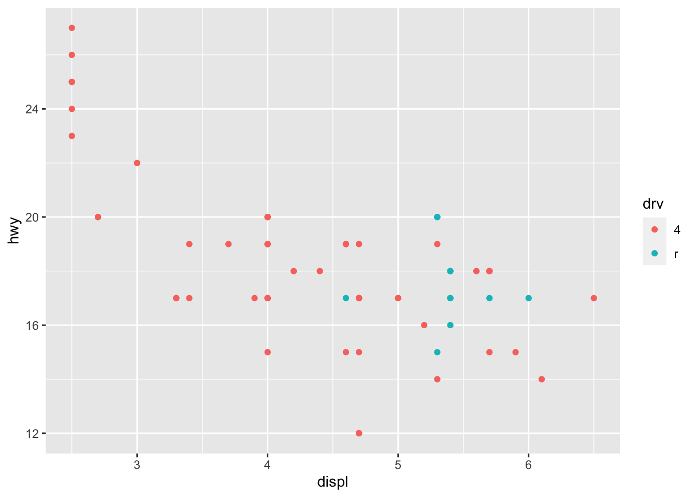
ggplot(compact, aes(displ, hwy, colour = drv)) +
geom_point()
For example, the scales are all different in those above plots. To overcome this issue, you can share scales across multiple plots with the following code:
x_scale <- scale_x_continuous(limits = range(mpg$displ))
y_scale <- scale_y_continuous(limits = range(mpg$hwy))
col_scale <- scale_colour_discrete(limits = unique(mpg$drv))
ggplot(suv, aes(displ, hwy, colour = drv)) +
geom_point() +
x_scale +
y_scale +
col_scale
ggplot(compact, aes(displ, hwy, colour = drv)) +
geom_point() +
x_scale +
y_scale +
col_scaleThemes
Customize nondata elements of your plot using themes.
Saving your plots
You can save your plots out of R and into a final write up using the codes ggsave() and knitr.ggsave(). These codes save the most recent plot.
CRIM250 Final Paper
Michaela Rieser, Rachael Villari, Sara Whitelaw December 8, 2021 ### Crime Distributions at Ivy League Institution
1 INTRODUCTION
At the University level, it is important that crime trends are observed in relation to the external factors that may have an effect. Ivy League universities, being private institutions that receive billions of dollars in endowments, should have ample measures in place to control crime rates on campus to maintain the safety of students. In this report, we will observe the total crime trends between the University of Pennsylvania, Yale University, and Columbia University and then take a more specific look at sexual offense trends. These trends will be compared with external research that analyzes police funding and the implementation of Title IX. Ultimately, it is important that more causal research is conducted in this area to observe whether it is beneficial to have privately funded university police departments and whether to bolster Title IX power. The data used in this report contain the total crime data from 2001-2017 for the three Ivy League institutions mentioned above.
2 EXPLORATORY DATA ANALYSIS
2.1 DATA DESCRIPTION The selected dataset was compiled data from Jacob Kaplan on total crimes reported at Universities (1). All of the data comes from the Department of Education Office of Postsecondary Education, which collects crime data from colleges. The following variables were the focus of the analysis: total number of aggravated assault, total number of arson, total number of motor vehicle theft, total number of non-negligent manslaughter, total number of negligent manslaughter, total number of sex offenses. The variables total number of on campus sex crimes and total number of off campus sex crimes were explored as well. All datasets used for this analysis individually contain 17 years of data with 1039 observations.
2.2 MISSING VALUES There are many missing values because, different from the value of 0, there are crime “categories” that do not have any reported crime data for certain years. For example, looking at the University of Pennsylvania data, there is no data for off-campus rape crimes until 2014. This will affect our data analysis, because the crime statistics may seem lower than they actually are.
2.3 UNIVERSITY LOCATIONS The three universities are located in urban settings. University of Pennsylvania is located in Philadelphia, PA (2019 pop. = 1.58 million) (2). Columbia University is located in New York City, NY (2019 pop. = 8.33 million) (2). Yale University is in New Haven, CT (2019 pop. = 130,250)(2). All population data was retrieved from the US census population estimates.
2.4 CAMPUS POLICE FORCE The University of Pennsylvania’s Division of Public Safety (DPS) comprises 180 personnel and 121 of these are sworn-in University of Pennsylvania police officers (3). The Yale Police Department (YPD) comprises 93 sworn-in police officerS (4). Due to New York regulations, Columbia University has 147 full-time security officers and no sworn-in officers (5). These security officers cannot carry firearms or arrest individuals, but they can detain suspected criminals on the University property. However, Columbia University is in the 26th precinct of the NYPD (6).
2.5 TOTAL CRIMES PER YEAR
datupenn <- read.csv(file = 'upenndata.csv')
plot(datupenn$year, datupenn$crimes_total_total, type = "b", main = "Scatterplot of total number of reported crimes at UPenn from 2001-2017", xlab = "Year", ylab = "Number of offenses reported to police", cex.axis=0.75, ylim=c(0,300))
axis(1, at=seq(2001,2017,1), cex.axis=0.75)
datcolumbia <- read.csv(file = 'columbiadata.csv')
plot(datcolumbia$year, datcolumbia$crimes_total_total, type = "b", main = "Scatterplot of total number of reported crimes at Columbia from 2001-2017", xlab = "Year", ylab = "Number of offenses reported to police", cex.axis=0.75, ylim=c(0,300))
axis(1, at=seq(2001,2017,1), cex.axis=0.75)
datyale <- read.csv(file = 'yaledata.csv')
plot(datyale$year, datyale$crimes_total_total, type = "b", main = "Scatterplot of total number of reported crimes at Yale from 2001-2017", xlab = "Year", ylab = "Number of offenses reported to police", cex.axis=0.75, ylim=c(0,300))
axis(1, at=seq(2001,2017,1), cex.axis=0.75)
2.6 AVERAGE OF TOTAL SEX OFFENSES PER YEAR
plot(datupenn$year, datupenn$crimes_total_sex_offenses_total, type = "b", main = "Scatterplot of total # of reported sex crimes at UPenn from 2001-2017", xlab = "Year", ylab = "Number of sex offenses reported to police", cex.main=0.75, cex.axis=0.75, ylim=c(0,35))
axis(1, at=seq(2001,2017,1), cex.axis=0.75)
plot(datcolumbia$year, datcolumbia$crimes_total_sex_offenses_total, type = "b", main = "Scatterplot of total # of reported sex crimes at Columbia from 2001-2017", xlab = "Year", ylab = "Number of sex offenses reported to police", cex.main=0.75, cex.axis=0.75, ylim=c(0,35))
axis(1, at=seq(2001,2017,1), cex.axis=0.75)plot(datyale$year, datyale$crimes_total_sex_offenses_total, type = "b", main = "Scatterplot of total # of reported sex crimes at Yale from 2001-2017", xlab = "Year", ylab = "Number of sex offenses reported to police", cex.main=0.75, cex.axis=0.75, ylim=c(0,35))
axis(1, at=seq(2001,2017,1), cex.axis=0.75)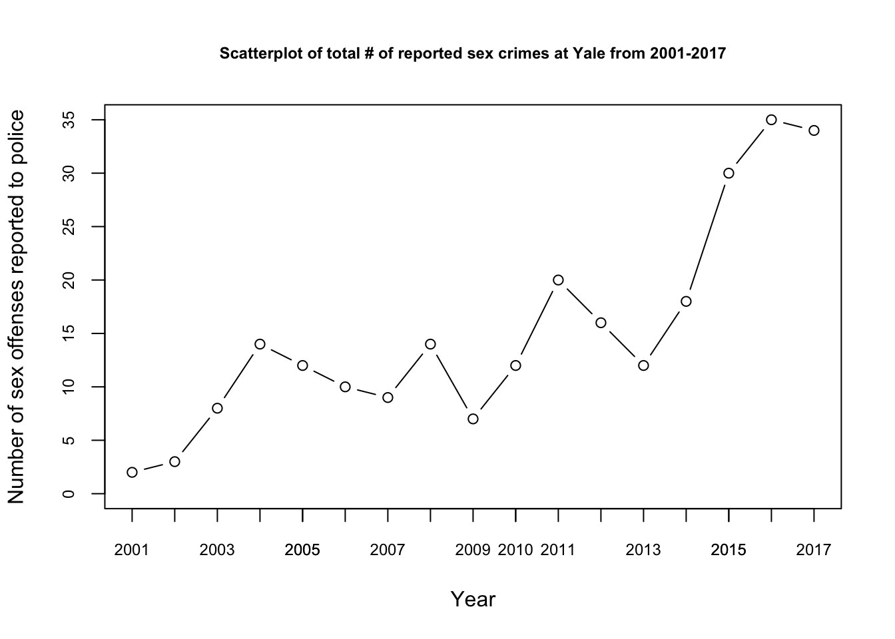
2.7 DIFFERENCES BY ON/OFF CAMPUS 2.7.1 ON CAMPUS SEX OFFENSES
plot(datupenn$year, datupenn$crimes_on_campus_sex_offenses_total, type = "b", main = "Scatterplot of total # of reported on campus sex crimes at UPenn from 2001-2017", xlab = "Year", ylab = "Number of sex offenses reported to police", cex.axis=0.75, cex.main=0.75, ylim=c(0,35))
axis(1, at=seq(2001,2017,1), cex.axis=0.75)
plot(datcolumbia$year, datcolumbia$crimes_on_campus_sex_offenses_total, type = "b", main = "Scatterplot of total # of reported on campus sex crimes at Columbia from 2001-2017", xlab = "Year", ylab = "Number of sex offenses reported to police", cex.axis=0.75, cex.main=0.75, ylim=c(0,35))
axis(1, at=seq(2001,2017,1), cex.axis=0.75)plot(datyale$year, datyale$crimes_on_campus_sex_offenses_total, type = "b", main = "Scatterplot of total # of reported on campus sex crimes at Yale from 2001-2017", xlab = "Year", ylab = "Number of sex offenses reported to police", cex.axis=0.75, cex.main=0.75, ylim=c(0,35))
axis(1, at=seq(2001,2017,1), cex.axis=0.75)2.7.2 OFF CAMPUS SEX OFFENSES
plot(datupenn$year, datupenn$crimes_noncampus_sex_offenses_total , type = "b", main = "Scatterplot of total # of reported off campus sex crimes at UPenn from 2001-2017", xlab = "Year", ylab = "Number of sex offenses reported to police", cex.axis=0.75, cex.main=0.75, ylim=c(0,5))
axis(1, at=seq(2001,2017,1), cex.axis=0.75)plot(datcolumbia$year, datcolumbia$crimes_noncampus_sex_offenses_total , type = "b", main = "Scatterplot of total # of reported off campus sex crimes at Columbia from 2001-2017", xlab = "Year", ylab = "Number of sex offenses reported to police", cex.axis=0.75, cex.main=0.75, ylim=c(0,5))
axis(1, at=seq(2001,2017,1), cex.axis=0.75)
plot(datyale$year, datyale$crimes_noncampus_sex_offenses_total , type = "b", main = "Scatterplot of total # of reported off campus sex crimes at Yale from 2001-2017", xlab = "Year", ylab = "Number of sex offenses reported to police", cex.axis=0.75, cex.main=0.75, ylim=c(0,5))
axis(1, at=seq(2001,2017,1), cex.axis=0.75)2.8 DIFFERENCES IN DIFFERENT CRIME TYPES_
vars<- c("year","crimes_total_aggravated_assault", "crimes_total_arson","crimes_total_motor_vehicle_theft","crimes_total_murder_non_negligent_manslaughter", "crimes_total_negligent_manslaughter", "crimes_total_sex_offenses_total" )
newupenndata <- datupenn[,vars]names(newupenndata)[names(newupenndata)=="crimes_total_aggravated_assault"] <- "Aggravated Assault"
names(newupenndata)[names(newupenndata)=="crimes_total_arson"] <- "Arson"
names(newupenndata)[names(newupenndata)=="crimes_total_motor_vehicle_theft"] <- "Motor Vehicle Theft"
names(newupenndata)[names(newupenndata)=="crimes_total_murder_non_negligent_manslaughter"] <- "Non-Negligent Manslaughter"
names(newupenndata)[names(newupenndata)=="crimes_total_negligent_manslaughter"] <- "Negligent Manslaughter"
names(newupenndata)[names(newupenndata)=="crimes_total_sex_offenses_total"] <- "Sex Offenses"library(kableExtra)kbl(newupenndata)| year | Aggravated Assault | Arson | Motor Vehicle Theft | Non-Negligent Manslaughter | Negligent Manslaughter | Sex Offenses |
|---|---|---|---|---|---|---|
| 2001 | 10 | 1 | 16 | 0 | 0 | 5 |
| 2002 | 13 | 2 | 26 | 0 | 0 | 16 |
| 2003 | 7 | 0 | 22 | 0 | 0 | 8 |
| 2004 | 9 | 0 | 17 | 0 | 0 | 8 |
| 2005 | 12 | 0 | 27 | 1 | 0 | 7 |
| 2006 | 18 | 0 | 14 | 2 | 0 | 7 |
| 2007 | 15 | 0 | 9 | 0 | 0 | 13 |
| 2008 | 7 | 0 | 5 | 2 | 0 | 7 |
| 2009 | 17 | 1 | 8 | 0 | 0 | 10 |
| 2010 | 20 | 1 | 12 | 0 | 0 | 14 |
| 2011 | 8 | 1 | 6 | 0 | 0 | 15 |
| 2012 | 15 | 1 | 15 | 0 | 0 | 16 |
| 2013 | 11 | 0 | 8 | 0 | 0 | 21 |
| 2014 | 14 | 2 | 7 | 1 | 0 | 16 |
| 2015 | 11 | 1 | 19 | 0 | 0 | 15 |
| 2016 | 18 | 2 | 21 | 0 | 0 | 24 |
| 2017 | 19 | 2 | 14 | 0 | 0 | 13 |
newupenndata %>%
kbl() %>%
kable_styling()| year | Aggravated Assault | Arson | Motor Vehicle Theft | Non-Negligent Manslaughter | Negligent Manslaughter | Sex Offenses |
|---|---|---|---|---|---|---|
| 2001 | 10 | 1 | 16 | 0 | 0 | 5 |
| 2002 | 13 | 2 | 26 | 0 | 0 | 16 |
| 2003 | 7 | 0 | 22 | 0 | 0 | 8 |
| 2004 | 9 | 0 | 17 | 0 | 0 | 8 |
| 2005 | 12 | 0 | 27 | 1 | 0 | 7 |
| 2006 | 18 | 0 | 14 | 2 | 0 | 7 |
| 2007 | 15 | 0 | 9 | 0 | 0 | 13 |
| 2008 | 7 | 0 | 5 | 2 | 0 | 7 |
| 2009 | 17 | 1 | 8 | 0 | 0 | 10 |
| 2010 | 20 | 1 | 12 | 0 | 0 | 14 |
| 2011 | 8 | 1 | 6 | 0 | 0 | 15 |
| 2012 | 15 | 1 | 15 | 0 | 0 | 16 |
| 2013 | 11 | 0 | 8 | 0 | 0 | 21 |
| 2014 | 14 | 2 | 7 | 1 | 0 | 16 |
| 2015 | 11 | 1 | 19 | 0 | 0 | 15 |
| 2016 | 18 | 2 | 21 | 0 | 0 | 24 |
| 2017 | 19 | 2 | 14 | 0 | 0 | 13 |
Totals <- c(213,14,246,6,0,215)
Crime <- c('Aggravated_Assault', 'Arson', 'Motor_Theft', 'Non_Negligent', 'Negligent', 'sex_offenses')
df <- data.frame(Totals, Crime)
barplot(Totals~Crime,data=df, main="Total Number of Different Crimes Reported at Penn 2001-2017", xlab="Crime Type", ylab="Total",ylim=c(0,250), cex.names=.5)
vars<- c("year","crimes_total_aggravated_assault", "crimes_total_arson","crimes_total_motor_vehicle_theft","crimes_total_murder_non_negligent_manslaughter", "crimes_total_negligent_manslaughter", "crimes_total_sex_offenses_total" )
newcolumbiadata <- datcolumbia[,vars]names(newcolumbiadata)[names(newcolumbiadata)=="crimes_total_aggravated_assault"] <- "Aggravated Assault"
names(newcolumbiadata)[names(newcolumbiadata)=="crimes_total_arson"] <- "Arson"
names(newcolumbiadata)[names(newcolumbiadata)=="crimes_total_motor_vehicle_theft"] <- "Motor Vehicle Theft"
names(newcolumbiadata)[names(newcolumbiadata)=="crimes_total_murder_non_negligent_manslaughter"] <- "Non-Negligent Manslaughter"
names(newcolumbiadata)[names(newcolumbiadata)=="crimes_total_negligent_manslaughter"] <- "Negligent Manslaughter"
names(newcolumbiadata)[names(newcolumbiadata)=="crimes_total_sex_offenses_total"] <- "Sex Offenses"kbl(newcolumbiadata)| year | Aggravated Assault | Arson | Motor Vehicle Theft | Non-Negligent Manslaughter | Negligent Manslaughter | Sex Offenses |
|---|---|---|---|---|---|---|
| 2001 | 13 | 0 | 3 | 0 | 0 | 1 |
| 2002 | NA | NA | NA | NA | NA | NA |
| 2003 | 7 | 0 | 7 | 0 | 0 | 6 |
| 2004 | NA | NA | NA | NA | NA | NA |
| 2005 | 11 | 1 | 5 | 0 | 0 | 8 |
| 2006 | 19 | 2 | 7 | 0 | 0 | 6 |
| 2007 | 26 | 0 | 6 | 1 | 0 | 9 |
| 2008 | 25 | 0 | 7 | 1 | 0 | 8 |
| 2009 | 8 | 0 | 4 | 0 | 0 | 22 |
| 2010 | 8 | 1 | 7 | 0 | 0 | 7 |
| 2011 | 10 | 1 | 3 | 0 | 0 | 7 |
| 2012 | 4 | 1 | 5 | 3 | 0 | 16 |
| 2013 | 8 | 0 | 1 | 0 | 0 | 24 |
| 2014 | 5 | 0 | 0 | 0 | 0 | 27 |
| 2015 | 3 | 0 | 0 | 0 | 0 | 23 |
| 2016 | 1 | 1 | 3 | 0 | 0 | 20 |
| 2017 | 4 | 0 | 4 | 0 | 0 | 12 |
newcolumbiadata %>%
kbl() %>%
kable_styling()| year | Aggravated Assault | Arson | Motor Vehicle Theft | Non-Negligent Manslaughter | Negligent Manslaughter | Sex Offenses |
|---|---|---|---|---|---|---|
| 2001 | 13 | 0 | 3 | 0 | 0 | 1 |
| 2002 | NA | NA | NA | NA | NA | NA |
| 2003 | 7 | 0 | 7 | 0 | 0 | 6 |
| 2004 | NA | NA | NA | NA | NA | NA |
| 2005 | 11 | 1 | 5 | 0 | 0 | 8 |
| 2006 | 19 | 2 | 7 | 0 | 0 | 6 |
| 2007 | 26 | 0 | 6 | 1 | 0 | 9 |
| 2008 | 25 | 0 | 7 | 1 | 0 | 8 |
| 2009 | 8 | 0 | 4 | 0 | 0 | 22 |
| 2010 | 8 | 1 | 7 | 0 | 0 | 7 |
| 2011 | 10 | 1 | 3 | 0 | 0 | 7 |
| 2012 | 4 | 1 | 5 | 3 | 0 | 16 |
| 2013 | 8 | 0 | 1 | 0 | 0 | 24 |
| 2014 | 5 | 0 | 0 | 0 | 0 | 27 |
| 2015 | 3 | 0 | 0 | 0 | 0 | 23 |
| 2016 | 1 | 1 | 3 | 0 | 0 | 20 |
| 2017 | 4 | 0 | 4 | 0 | 0 | 12 |
Totals <- c(152,7,62,5,0,196)
Crime <- c('Aggravated_Assault', 'Arson', 'Motor_Theft', 'Non_Negligent', 'Negligent', 'sex_offenses')
df <- data.frame(Totals, Crime)
barplot(Totals~Crime,data=df, main="Total Number of Different Crimes Reported at Columbia 2001-2017", xlab="Crime Type", ylab="Total",ylim=c(0,250), cex.names=.5)
vars<- c("year","crimes_total_aggravated_assault", "crimes_total_arson","crimes_total_motor_vehicle_theft","crimes_total_murder_non_negligent_manslaughter", "crimes_total_negligent_manslaughter", "crimes_total_sex_offenses_total" )
newyaledata <- datyale[,vars]names(newyaledata)[names(newyaledata)=="crimes_total_aggravated_assault"] <- "Aggravated Assault"
names(newyaledata)[names(newyaledata)=="crimes_total_arson"] <- "Arson"
names(newyaledata)[names(newyaledata)=="crimes_total_motor_vehicle_theft"] <- "Motor Vehicle Theft"
names(newyaledata)[names(newyaledata)=="crimes_total_murder_non_negligent_manslaughter"] <- "Non-Negligent Manslaughter"
names(newyaledata)[names(newyaledata)=="crimes_total_negligent_manslaughter"] <- "Negligent Manslaughter"
names(newyaledata)[names(newyaledata)=="crimes_total_sex_offenses_total"] <- "Sex Offenses"kbl(newyaledata)| year | Aggravated Assault | Arson | Motor Vehicle Theft | Non-Negligent Manslaughter | Negligent Manslaughter | Sex Offenses |
|---|---|---|---|---|---|---|
| 2001 | 1 | 0 | 17 | 0 | 0 | 2 |
| 2002 | 4 | 0 | 25 | 0 | 0 | 3 |
| 2003 | 3 | 0 | 26 | 0 | 0 | 8 |
| 2004 | 2 | 0 | 28 | 0 | 0 | 14 |
| 2005 | 1 | 0 | 15 | 0 | 0 | 12 |
| 2006 | 1 | 0 | 22 | 0 | 0 | 10 |
| 2007 | 0 | 1 | 19 | 0 | 0 | 9 |
| 2008 | 3 | 0 | 12 | 0 | 0 | 14 |
| 2009 | 0 | 2 | 20 | 1 | 0 | 7 |
| 2010 | 1 | 0 | 5 | 0 | 0 | 12 |
| 2011 | 8 | 3 | 20 | 0 | 0 | 20 |
| 2012 | 6 | 0 | 21 | 0 | 0 | 16 |
| 2013 | 0 | 0 | 14 | 1 | 0 | 12 |
| 2014 | 3 | 1 | 11 | 0 | 0 | 18 |
| 2015 | 7 | 1 | 16 | 0 | 0 | 30 |
| 2016 | 7 | 1 | 17 | 0 | 0 | 35 |
| 2017 | 9 | 1 | 18 | 0 | 0 | 34 |
newyaledata %>%
kbl() %>%
kable_styling()| year | Aggravated Assault | Arson | Motor Vehicle Theft | Non-Negligent Manslaughter | Negligent Manslaughter | Sex Offenses |
|---|---|---|---|---|---|---|
| 2001 | 1 | 0 | 17 | 0 | 0 | 2 |
| 2002 | 4 | 0 | 25 | 0 | 0 | 3 |
| 2003 | 3 | 0 | 26 | 0 | 0 | 8 |
| 2004 | 2 | 0 | 28 | 0 | 0 | 14 |
| 2005 | 1 | 0 | 15 | 0 | 0 | 12 |
| 2006 | 1 | 0 | 22 | 0 | 0 | 10 |
| 2007 | 0 | 1 | 19 | 0 | 0 | 9 |
| 2008 | 3 | 0 | 12 | 0 | 0 | 14 |
| 2009 | 0 | 2 | 20 | 1 | 0 | 7 |
| 2010 | 1 | 0 | 5 | 0 | 0 | 12 |
| 2011 | 8 | 3 | 20 | 0 | 0 | 20 |
| 2012 | 6 | 0 | 21 | 0 | 0 | 16 |
| 2013 | 0 | 0 | 14 | 1 | 0 | 12 |
| 2014 | 3 | 1 | 11 | 0 | 0 | 18 |
| 2015 | 7 | 1 | 16 | 0 | 0 | 30 |
| 2016 | 7 | 1 | 17 | 0 | 0 | 35 |
| 2017 | 9 | 1 | 18 | 0 | 0 | 34 |
Totals <- c(56,10,306,2,0,246)
Crime <- c('Aggravated_Assault', 'Arson', 'Motor_Theft', 'Non_Negligent', 'Negligent', 'sex_offenses')
df <- data.frame(Totals, Crime)
barplot(Totals~Crime,data=df, main="Total Number of Different Crimes Reported at Yale 2001-2017", xlab="Crime Type", ylab="Total",ylim=c(0,325), cex.names=.5)
3 CAUSAL ANALYSIS
3.1 CAUSAL PARAMETER OF INTEREST The causal parameters of interest are the size and funding of the police forces of the three Ivy League institutions: University of Pennsylvania, Yale University, and Columbia University. Additionally, we note the effect of Title IX guidelines on the sexual offense trends. While Columbia has 147 security officers rather than a private police force, Columbia benefits from the NYPD as they are located in the 26th precinct. Due to the size and power of the NYPD, Columbia’s total crime trend could be more reflective of the crime trends in the surrounding New York area. UPenn has a private police force of 121 sworn officers, which receives 27 million dollars of funding. UPenn’s negative crime trend could be a result of the robust size and funding of the police force, but without causal analysis and true experiments that include randomization, it is unclear whether this external factor has a relevant impact. Finally, on-campus sexual offense trends could be influenced by the causal parameter of Title IX guidelines and their implementation in university proceedings surrounding sexual offense cases. Title IX allows increased protections and assurance of investigation for on-campus students, which could possibly explain the high reporting rates for sexual offenses. Conversely, Title IX guidelines limit protections in off campus offenses noted in our discussion section (7). It is important to note that these causal parameters can only be hypothesized as we do not have sufficient data to analyze whether they play an influential role in our EDA of the crime distributions of the three Ivy Leagues explored.
3.2 PROPOSED CAUSAL DAG The proposed causal DAG consists of two actions, the outcomes of the actions, and the confounding variables that may impact both the actions and the outcomes. In our case of understanding the crime distribution of the Columbia, Yale, and UPenn, the actions that influence the crime reporting rates are the strength and presence of the campus funded police force and Title IX when regarding the reporting of sex offenses. The expected outcomes of higher funding and strong on campus police force would seemingly decrease total crime rates whereas decreased funding and smaller police force would result in higher crime. Title IX’s on-campus guidelines would result in higher crime reporting of sex offenses due to increased victim protection whereas their off campus guidelines would result in decreased reporting. However, the confounding variables that may impact both these actions and outcomes are reporting bias, in that there may be failure to report by police offices as well as failure to report by victim (sex assault), and the danger of the location of the school.
4 Conclusion
We wanted to determine whether 1) There was a significant difference in total crime rates and sexual offenses between three different urban, Ivy League institutions, and 2) if police size and funding, and Title IX guidelines influenced this relationship. Due to a lack of sufficient data on which we could perform linear regression to explore the correlation between these two actions (police funding and Title IX guidelines), it is unclear whether they have an impact on the total crime trends and sexual offense rates at any of the Ivy Leagues we analyzed. However, overall, we found that the University of Pennsylvania had the highest total number of reported crimes from 2001-2017, with a total of 2069 crimes compared to Yale (1991) and Columbia (1589). It is important to note that Columbia had two years of missing data, which could change how its crime rates actually compare to the other universities. Yale University had the highest number of reported sex offenses (246) compared to Columbia University (196) and University of Pennsylvania (216). We find this especially interesting because UPenn has the highest crime rate, despite having the largest number of on-campus sworn-in officers. Additionally, it is intriguing that Yale University is located in the smallest city (population =130,250) of the three schools analyzed, but still has the highest number of reported sex offenses. Yale University also has the lowest police force funding ($10 million), despite having the largest endowment ($42.3 billion) of the three Ivies (2) (8) (9). We also found that almost all sex offenses reported to the respective campus police forces occurred on campus, rather than off campus. It is possible that this is because off-campus sex offenses are reported to the city police forces. In terms of Title IX providing explanation for the stark difference between on campus and off campus sexual offense trends, new Title IX guidelines do not require universities to investigate events that occur off campus. Therefore, there could ultimately be higher off campus sexual offense trends due to lack of investigation by universities. Our results have some limitations. The Columbia University data set was missing crime data for 2002 and 2004. The data sets that we used were subject to reporting bias and missing data. Failure to report by police officers and failure to report by victim, which is especially prevalent with sexual assault cases, has an effect on the total number of crimes reported, as well as the total number of sexual offenses reported. In addition, due to limited data, we only used scatter and box plots to compare the crime distribution and analyze the relationship between police force funding, Title IX enactment, and crime distribution. The use of linear regression would allow for strong analysis between these variables.
Sources
- Kaplan, J. (n.d.). Crimes On University Campuses. Data | Jacob Kaplan. Retrieved December 7, 2021, from https://jacobdkaplan.com/data.html.
- Bureau, U. S. C. (2021, October 8). American Community survey 5-year data (2009-2019). Census.gov. Retrieved December 7, 2021, from https://www.census.gov/data/developers/data-sets/acs-5year.html.
- Pennsylvania, U. of. (n.d.). About our division. Division of Public Safety. Retrieved December 7, 2021, from https://www.publicsafety.upenn.edu/about/.
- Yale University. (2020, June). Yale Police Department. It’s Your Yale. Retrieved December 7, 2021, from https://your.yale.edu/community/public-safety/yale-police-department.
- Heinzerling, K. (2017, October 8). With 120 officers, Penn has the largest private police force in Pennsylvania. The Daily Pennsylvanian. Retrieved December 7, 2021, from https://www.thedp.com/article/2017/10/with-120-officers-penn-has-the-largest-private-police-force-in-pennsylvania.
- 26th precinct. 26 Precinct - NYPD. (n.d.). Retrieved December 7, 2021, from https://www1.nyc.gov/site/nypd/bureaus/patrol/precincts/26th-precinct.page.
- Feldman, S. (2018, October 8). Yale and Title IX: A Complicated History and an Unclear Future. The Politic. Retrieved December 7, 2021, from https://thepolitic.org/yale-and-title-ix-a-complicated-history-and-an-unclear-future/.
- Why: Black students for disarmament at Yale. bsdy. (n.d.). Retrieved December 7, 2021, from https://www.defundypd.com/why.
- Yale Investments Office. (n.d.). Retrieved December 07, 2021, from https://investments.yale.edu/